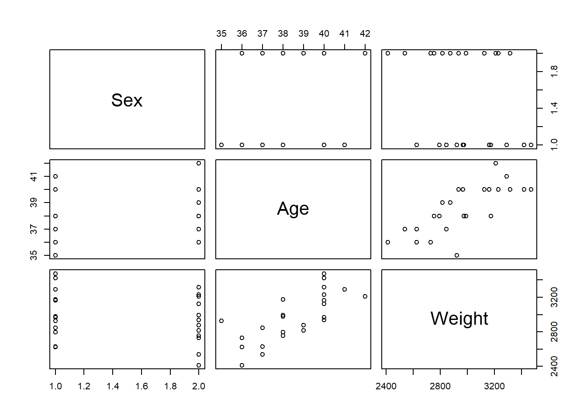
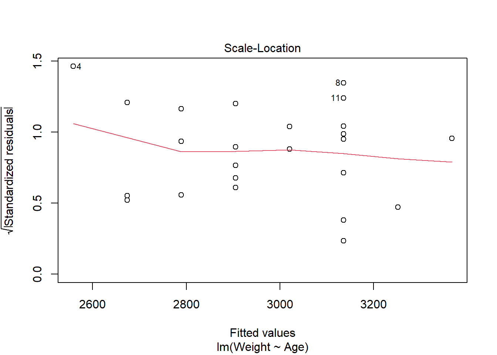

4 Introduction to Statistical Modelling with Implementation in R
This module contains an introduction to the concepts of statistical modelling, covering the key types of models, starting with simple linear regression and progressing to more complex models with implementation in R. Module 4 also introduces various methodologies for model selection, model prediction and cross-validation.
4.1 Concept of statistical modelling
4.1.1 Overview of statistical modelling
Statistical modelling, also known as regression analysis, can be described as a statistical technique used for exploring the relationship between a dependent variable (also called the outcome or response variable) and one or more independent variables (also called the explanatory variable or covariates). Data is viewed as being generated by some random process from which conclusions can be drawn. Statistical models help to understand these processes in greater depth, something that can be of interest for multiple reasons.
- Future predictions can be made from understanding the random process
- Decisions can be made based on the inference from the random process
- The random process itself may be of scientific interest
For example, statistical modelling can be used to find out about the relationship between rainfall and crop yields, or the relationship between unemployment and poverty.
Suppose for \(i=1,\cdots,n\) observations we have the observed responses \[ \boldsymbol{y}=\begin{pmatrix} y_1 \\ y_2 \\ \vdots \\ y_n \end{pmatrix}, \] where each \(y_i\) has an associated vector of values for \(p\) independent variables
\[ x_i=\begin{pmatrix} x_{i1} \\ x_{i2} \\ \vdots \\ x_{in} \end{pmatrix}. \]
The observed responses \(\boldsymbol{y}\) are assumed to be realisations of the random variables denoted by \[ \boldsymbol{Y}=\begin{pmatrix} Y_1 \\ Y_2 \\ \vdots \\ Y_n \end{pmatrix}. \] Alternatively, the random variable \(Y_i\) is the predicted (or fitted) value of the observed response \(y_i\).
The use of either upper or lower case is important in statistical modelling as the case used indicates to whether the variable is fixed (e.g. the observed responses \(\boldsymbol{y}\) ) or random (e.g. the predicted responses \(\boldsymbol{Y}\) ). The variability in the independent variable(s) is not modelled, therefore, it is treated as a fixed (not random) variable, hence given in lower case, \(x_i\).
4.1.2 Correlation
The relationship between variables can be determined by the extent to which they are related, also known as correlation. Correlation can either be positive, negative, or it does not exist (no correlation). What each type of correlation means is as follows:
- Positive: as the value of one variable increases, the value of another increases
- Negative: as the value of one variable decreases, the value of another decreases
- No correlation: the value of one variable does not affect the value of another variable
A visual example of correlation can be seen in the figure below.
(#fig:image correlation)Visual examples of the different types of correlation
Exercise: Identify the dependent and independent variables in the following sentence:
A researcher investigates the effects of school density on the grades of its pupils.
4.1.3 Scaled covariates
When using more than one covariate in the modelling, it is important that they are given in the same units for comparison purposes. In the cases where they are not in the same units, covariates can be scaled to ensure the results are comparable.
The two main methods for scaling are as follows:
- Centring: subtract each value from the mean value
- Z-score: subtract each value from the mean value and divide by the standard deviation
4.1.4 Uncertainty
Uncertainty and error is unavoidable when estimating and predicting. The less error in your predictions, the more reliable the results are, therefore, it is important to measure the error margin when modelling. This can be done by measuring how close (or far) the predicted value is from the mean value. Alternatively, confidence intervals (in frequentest/classical statistics) or credible intervals (in Bayesian statistics) can be used. In this chapter, the focus is on frequentest statistics so confidence intervals will be used, Bayesian statistics will be introduced in Module 6.
4.2 Simple regression
There are some important assumptions required for simple regression modelling, given as follows.
- Normality of the response/residuals (e.g. histograms, Q-Q plot)
- Linear relationship between response and predictors (e.g. scatter plot, residuals vs fitted plot)
- Homoscedasticity - constant variance of the residuals (e.g. spread-location plot)
- Independence between predictors - no multicollinearity (e.g. use
Corr(X1, X2)function, should be approximately equal to 1)
To check that the response follows the normality assumption, plots can be used. If the normality assumption holds, the shape of the histogram will resemble the shape of a bell curve, as seen in the example below using the birth data. This dataset has the dependent variable Weight for the birth weight (in grams) of 24 newborn babies with 2 independent variables, Sex for the sex and Age for the gestational age (in weeks) of the babies, where Sex is a categorical variable with values
\[\text{Sex} = \begin{cases} 1 & \text{if male, or} \\ 2 & \text{if female}. \end{cases}\]
#create birth weight dataset
birth <- data.frame(
Sex= c(1,1,1,1,1,1,1,1,1,1,1,1,2,2,2,2,2,2,2,2,2,2,2,2),
Age=c(40,38,40,35,36,37,41,40,37,38,40,38,40,36,40,38,42,39,40,37,36,38,39,40),
Weight=c(2968,2795,3163,2925,2625,2847,3292,3473,2628,3176,3421,2975,3317,
2729,2935,2754,3210,2817,3126,2539,2412,2991,2875,3231))#plot a histogram of the birth weights
hist(birth$Weight, breaks=10,
main="Histogram of Birth Weight",
xlab = "Birth Weight")
Alternatively, a Q-Q (quantile-quantile) plot can be used to assess the validity of the normality assumption, which plots the theoretical quantiles against the sample quantiles. If the normality assumption holds, the points on the plot will approximately follow a straight line. To plot this in R, the function qqnorm() can be used with an argument for the response that is being assessed, with the function qqline() being used with the response as an argument to add a reference line, making it easier to see whether the relationship is in fact linear. This is demonstrated below with the birth dataset, where it can be seen that the normality assumption holds given that the points on the Q-Q plot approximately follow the straight line given. However, in the case where the normality assumption does not hold, transformations such as the log-transformation can be used. If transformations are not appropriate, such as when the data is count or binary, alternative methods of modelling are required, leading to generalised linear modelling discussed later in this module.
#qq plot of the birth weight data
qqnorm(birth$Weight)
#add a reference line to the plot
qqline(birth$Weight, col="blue")
Using the plotting techniques discussed in Module 2, exploratory analysis can be conducted on the data, checking the assumption of a linear relationship between the response and predictors. Through using the plot() function with the response and the predictor you wish to test as arguments, if the resulting scatter plot has a linear trend, then this assumption is met.
#scatter plot for linear assumption
plot(birth$Age, birth$Weight,
xlab = "Gestational age (in weeks)",
ylab = "Birth weight (in grams)",
main = "Gestational age vs birth weight")
The plot of gestational age vs birth weight shows that there is a positive correlation between the two variables, indicating that as gestational age increases, the birth weight also increases, where the points roughly follow a straight line indicating that the assumption of linearity between the response and predictor is met.
Another way to test this assumption is to use the pairs() function in R, where when the dataset of interest is included as an argument, it provides a matrix of scatter plots that show the relationship of each combination of variables available in the data.

The scatter plots for Age and Weight indicate that the relationship between the variables is approximately linear and therefore the assumption is met. However, if this assumption was not upheld, then appropriate transformations could be used, for example, a log-transformation. This is discussed more in the non-linear regression modelling section.
Alternative ways of checking assumptions require for the model to be fitted first, these methods will be discussed in the following sections.
4.2.1 Linear regression
Simple linear regression is a regression model which has a linear relationship due to the dependent variable depends only on one independent variable, alternatively, the independent variable is conditioned only on one dependent variable. A key concept of the simple linear regression model is that it is assumed each response follows a normal distribution, \(Y_i \sim N(\mu_i, \sigma^2)\). The simple linear regression model can be written as \[ Y_i = \beta_0 + \beta_1 x_i + \epsilon_i,\]
where \(\beta_0\) is the \(y-\)intercept, \(\beta_1\) is the slope and the errors are independent and identically distributed as \(\epsilon\sim N(0, \sigma^2)\) for \(i=1,...,n\). The error can be described as the random difference between the value of \(Y_i\) and \(\beta_0 +\beta_1 x_i\) which is the value of its conditional mean.
An example of a simple linear regression can be seen below with the birth dataset. The birth weight of each baby can be modelled using either the gestational age or sex of the individual for a simple linear regression model. In this example we will focus on predicting the birth weight of a baby using the gestational age.
\[\text{Weight}_i = \beta_0 + \beta_1\text{Age}_i + \epsilon_i\] where \(\epsilon_i \sim Normal(0, \sigma)\).
To do linear modelling in R, the function lm() can be used with an argument for the model formula. When fitting a simple linear regression model, the function glm(), used for fitting generalised linear models, yields identical results to the function lm(). Generalised linear models will be discussed later in the module.
#fit a linear model for birth weight by gestational age
birth_simple_lm <- lm(Weight ~ Age, data = birth)
birth_simple_lm##
## Call:
## lm(formula = Weight ~ Age, data = birth)
##
## Coefficients:
## (Intercept) Age
## -1485.0 115.5#fit the linear model using the function glm
birth_simple_glm <- glm(Weight ~ Age, data = birth)
birth_simple_glm #results are identical to the results from the lm function##
## Call: glm(formula = Weight ~ Age, data = birth)
##
## Coefficients:
## (Intercept) Age
## -1485.0 115.5
##
## Degrees of Freedom: 23 Total (i.e. Null); 22 Residual
## Null Deviance: 1830000
## Residual Deviance: 816100 AIC: 324.5
(#fig:image lm summary)Reading the coefficients from the model output
The output of the model gives the resulting coefficients. (Intercept) corresponds to the \(y-\)intercept \(\beta_0\), in this case \(\beta_0=-1485.0\) meaning that if \(\text{Age}=0\) then the birth weight would be -1485.0g. The coefficient Age corresponds to the slope \(\beta_1\), in this case \(\beta_1=115.5\), meaning that for each (1) unit increase in Age, the birth weight will increase by 115.5g.
Including the linear model as an argument in the function summary() in R provides summary statistics for the linear model. These statistics include the previously given coefficients, as well as the corresponding standard errors and p-values (probability values) for the coefficients (among other information). This function is beneficial for exploring whether the independent variables are statistically significant and improve the model, as a small p-value (typically chosen to be less than 0.05) indicates that there is a statistically significant relationship between variables.
##
## Call:
## lm(formula = Weight ~ Age, data = birth)
##
## Residuals:
## Min 1Q Median 3Q Max
## -262.03 -158.29 8.35 88.15 366.50
##
## Coefficients:
## Estimate Std. Error t value Pr(>|t|)
## (Intercept) -1485.0 852.6 -1.742 0.0955 .
## Age 115.5 22.1 5.228 3.04e-05 ***
## ---
## Signif. codes: 0 '***' 0.001 '**' 0.01 '*' 0.05 '.' 0.1 ' ' 1
##
## Residual standard error: 192.6 on 22 degrees of freedom
## Multiple R-squared: 0.554, Adjusted R-squared: 0.5338
## F-statistic: 27.33 on 1 and 22 DF, p-value: 3.04e-05
(#fig:image coef summary)Interpreting the summary output
In this case, it can be seen that the p-value for the Age covariate is \(<0.05\) and is therefore statistically significant to the 5% level and improves the model (and therefore should remain in the model).
A line of best fit using the linear model can be added to the above plot through using the function abline(), adding the entire linear model as an argument of the function.
#plot birth weight against gestational age
plot(birth$Weight ~ birth$Age,
xlab = "Gestational age (in weeks)",
ylab = "Birth weight (in grams)",
main = "Gestational age vs birth weight")
#add line for linear model
abline(birth_simple_lm)
To create diagnostic plots for the linear model to check the required assumptions, the function plot() can be used with the model as the argument. This creates four plots, each having a different purpose. To produce only one of the four plots, add an argument for the plot index you wish to show (the fourth plot is combined of Cook’s distance and Residuals vs Leverage plots, to index the fourth plot, include 5 as an argument).

The first plot is the Residuals vs Fitted plot, used to check the linearity assumption.

In this plot, there should be no pattern and the red line should be approximately horizontal at zero for the normality assumption to hold. The residuals plot for the birth data is quite horizontal and is based around zero, however, there is a slight indication of a pattern meaning that there could be some problem with the linear model. This problem could be many things, possibly indicating that the relationship is not linear and instead quadratic for example.
The second plot is the Normal Q-Q plot, similar to that produced by the qqnorm() function discussed previously, but now is used to check the normality assumption of the residuals.

The plot for the birth data does show some problems with the normality assumption given that the points to not all approximately fall on the reference line. This means that the normality assumption cannot be assumed.
The third plot is the Scale-Location plot, or the Spread-Location plot, used to verify the homoscedasticity (homogeneity of variance). For the assumption to be upheld, the line should be approximately horizontal with the points equally dispersed.

In this case, the points are approximately equally spread out with the reference line being mostly horizontal, indicating that the homoscedasticity assumption may be upheld.
Finally, the fourth plot is the Residuals vs Leverage plot, used for identifying outlier points that have high leverage. These are points that may impact the results of the regression analysis if they are included or excluded, although not all outliers are influential to alter the results. This plot identifies the 3 most extreme values.

This plot identifies the 3 most extreme points (#4, #8 and #21), where point number 4 is identified as influential through using the measure of Cook’s distance. There is evidence that this point will alter the results of the regression analysis so there should be some consideration whether to include this point or not.
4.2.2 Polynomial regression
The data is not always best described by a linear relationship between the dependent and independent variables, for example, there could be a quadratic relationship between the variables.
The following are examples of polynomial regression models:
- A quadratic function: \[ Y_i = \beta_0 + \beta_1 x_i + \beta_2 x_i^2 + \epsilon_i.\]
- A polynomial of degree 4: \[Y_i = \beta_0 + \beta_1 x_i + \beta_2 x_i^2 + \beta_3 x_i^3 + \beta_4 x_i^4+ \epsilon_i.\]
For example, to fit a simple polynomial regression model with a quadratic function to the birth weight dataset used above, the quadratic term needs to be created and added to the data, then the function lm() can be used inputting the model formula. Alternatively, the quadratic term can be included in the formula within the function I() which lets R know to include that term as a separate term within the model. Another option is to use the function poly() with arguments for the independent variable and the degree of polynomial wanted, making the code more efficient when higher order polynomials are used in particular, instead of typing out a long equation with many terms.
#create the quadratic term and add to data before modelling
birth$Age2 <- birth$Age^2
birth_quad_lm1 <- lm(Weight ~ Age + Age2, data = birth)
summary(birth_quad_lm1)##
## Call:
## lm(formula = Weight ~ Age + Age2, data = birth)
##
## Residuals:
## Min 1Q Median 3Q Max
## -276.86 -156.62 5.87 99.72 340.27
##
## Coefficients:
## Estimate Std. Error t value Pr(>|t|)
## (Intercept) 7288.668 17631.783 0.413 0.684
## Age -342.639 919.905 -0.372 0.713
## Age2 5.969 11.980 0.498 0.624
##
## Residual standard error: 196 on 21 degrees of freedom
## Multiple R-squared: 0.5592, Adjusted R-squared: 0.5173
## F-statistic: 13.32 on 2 and 21 DF, p-value: 0.0001837#alternatively, include quadratic term within I()
birth_quad_lm2 <- lm(Weight ~ Age + I(Age^2), data = birth)
summary(birth_quad_lm2) #produces the same model##
## Call:
## lm(formula = Weight ~ Age + I(Age^2), data = birth)
##
## Residuals:
## Min 1Q Median 3Q Max
## -276.86 -156.62 5.87 99.72 340.27
##
## Coefficients:
## Estimate Std. Error t value Pr(>|t|)
## (Intercept) 7288.668 17631.783 0.413 0.684
## Age -342.639 919.905 -0.372 0.713
## I(Age^2) 5.969 11.980 0.498 0.624
##
## Residual standard error: 196 on 21 degrees of freedom
## Multiple R-squared: 0.5592, Adjusted R-squared: 0.5173
## F-statistic: 13.32 on 2 and 21 DF, p-value: 0.0001837#alternatively, include quadratic term within poly()
birth_quad_lm3 <- lm(Weight ~ poly(x = Age, degree = 2, raw = TRUE),
data = birth)
summary(birth_quad_lm3) #produces the same model##
## Call:
## lm(formula = Weight ~ poly(x = Age, degree = 2, raw = TRUE),
## data = birth)
##
## Residuals:
## Min 1Q Median 3Q Max
## -276.86 -156.62 5.87 99.72 340.27
##
## Coefficients:
## Estimate Std. Error t value Pr(>|t|)
## (Intercept) 7288.668 17631.783 0.413 0.684
## poly(x = Age, degree = 2, raw = TRUE)1 -342.639 919.905 -0.372 0.713
## poly(x = Age, degree = 2, raw = TRUE)2 5.969 11.980 0.498 0.624
##
## Residual standard error: 196 on 21 degrees of freedom
## Multiple R-squared: 0.5592, Adjusted R-squared: 0.5173
## F-statistic: 13.32 on 2 and 21 DF, p-value: 0.0001837The output from the summary() function works the same for non-linear models as it does for linear, with the coefficient estimates corresponding to the values of \(\alpha\) for the intercept and the \(\beta\) value(s) for the covariate(s). In this case, it can be seen that adding the quadratic term for age does not improve upon the linear model given that the p-value (Pr(>|t|)) is not statistically significant. This conclusion is reasonable given that the line of best fit for the linear model fits the birth weight data well and the data does not show a quadratic trend.
The welding dataset below contains information from the Welding Institute in Abingdon, providing \(n=21\) measurements of currents in amps with the corresponding minimum diameter of the weld. Given that the diameter of the weld depends on the amount of current, Current is the independent variable and Diameter is the dependent variable.
#create welding dataset
welding <- data.frame(Current = c(7.82, 8.00, 7.95, 8.07, 8.08, 8.01, 8.33,
8.34, 8.32, 8.64, 8.61, 8.57, 9.01, 8.97,
9.05, 9.23, 9.24, 9.24, 9.61, 9.60, 9.61),
Diameter = c(3.4, 3.5, 3.3, 3.9, 3.9, 4.1, 4.6, 4.3, 4.5,
4.9, 4.9, 5.1, 5.5, 5.5, 5.6, 5.9, 5.8, 6.1,
6.3, 6.4, 6.2))The welding data can be modelled in the same way as the birth weight dataset, using the function lm(), as seen in the example below.
#simple linear model
weld_simple_lm <- lm(Diameter ~ Current, data = welding)
summary(weld_simple_lm)##
## Call:
## lm(formula = Diameter ~ Current, data = welding)
##
## Residuals:
## Min 1Q Median 3Q Max
## -0.42623 -0.07282 0.01637 0.08269 0.34586
##
## Coefficients:
## Estimate Std. Error t value Pr(>|t|)
## (Intercept) -9.45427 0.65526 -14.43 1.09e-11 ***
## Current 1.65793 0.07531 22.01 5.53e-15 ***
## ---
## Signif. codes: 0 '***' 0.001 '**' 0.01 '*' 0.05 '.' 0.1 ' ' 1
##
## Residual standard error: 0.2012 on 19 degrees of freedom
## Multiple R-squared: 0.9623, Adjusted R-squared: 0.9603
## F-statistic: 484.6 on 1 and 19 DF, p-value: 5.529e-15#quadratic model
weld_quad_lm <- lm(Diameter ~ Current + I(Current^2), data = welding)
summary(weld_quad_lm)##
## Call:
## lm(formula = Diameter ~ Current + I(Current^2), data = welding)
##
## Residuals:
## Min 1Q Median 3Q Max
## -0.31023 -0.10023 -0.00496 0.09880 0.35197
##
## Coefficients:
## Estimate Std. Error t value Pr(>|t|)
## (Intercept) -41.5662 9.9392 -4.182 0.000560 ***
## Current 9.0430 2.2833 3.960 0.000917 ***
## I(Current^2) -0.4227 0.1306 -3.236 0.004589 **
## ---
## Signif. codes: 0 '***' 0.001 '**' 0.01 '*' 0.05 '.' 0.1 ' ' 1
##
## Residual standard error: 0.1644 on 18 degrees of freedom
## Multiple R-squared: 0.9761, Adjusted R-squared: 0.9735
## F-statistic: 368.3 on 2 and 18 DF, p-value: 2.501e-15Unlike with the birth weight quadratic model, the addition of a quadratic term to the model for the welding data improves the fit of the model, given that both the linear and quadratic terms are statistically significant at the 5% significance level. This improved fit can be demonstrated graphically using the function predict() with arguments for the model you wish to predict from and a new dataset with a range of values you wish to predict the values of the dependent variable from (typically a sequence of evenly spaced numbers from the minimum to maximum values of your independent variable).
#made a new dataset
weld.new <- data.frame(Current = seq(from = min(welding$Current),
to = max(welding$Current),
length.out = 100))
#use the predict function
pred_simple_lm <- predict(weld_simple_lm, newdata = weld.new)
pred_quad_lm <- predict(weld_quad_lm, newdata = weld.new)
#basic plot for relationship between variables
plot(Diameter ~ Current, data = welding)
#add lines for each of the sets of predicted values
lines(pred_simple_lm ~ weld.new$Current, col = "blue", lty = 2, lwd = 2)
lines(pred_quad_lm ~ weld.new$Current, col = "red", lty = 1, lwd = 2)
#add a legend for clarity
legend("topleft", c("Linear", "Quadratic"),
col = c("blue", "red"), lty = c(2,1), lwd = 2)
The plot showing lines of best fit for both the simple linear model and the quadratic model demonstrate the improved fit of the quadratic model, with the added flexibility of the curve matching the trend of the data better.
This process can be extended for including higher degrees of polynomials in the regression models, although it is important to be wary of overfitting the model to the data as this risks the model only having use for inference to the original dataset.
4.2.3 Non-linear regression
The relationships being explored are not always best described by a linear relationship. In these cases, the data can be transformed, for example using logarithms, square roots and exponentials, to fit a non-linear model which is more flexible, potentially explaining the relationship between variables better. For a regression model to be non-linear, \(Y\) must be a non-linear function of the parameters (e.g. \(\beta_0\) and \(\beta_1\)), however, \(Y\) can still be a linear function of the covariates \(x\).
The following are examples of non-linear regression models:
- Squared value of the \(\beta\) coefficient: \[Y_i = \beta_0 + \beta_1^2x_i + \epsilon_i.\]
- Logarithmic: \[\log(Y_i) = \beta_0 + \beta_1 x_i + \epsilon_i\] which implies \[Y_i = \exp(\beta_0 + \beta_1 x_i + \epsilon_i)=\exp(\beta_0)\exp(\beta_1 x_i)\exp(\epsilon)\] a relationship which is multiplicative, meaning that a unit increase in \(x_i\) corresponds to \(Y_i\) being multiplied by a value of \(\exp(\beta x_i)\), instead of an additive effect of \(\beta x_i\) like with a linear model.
- Square root: \[Y_i^{1/2}=\beta_0 + \beta_1 x_i + \epsilon_i.\]
- Negative reciprocal: \[-\frac{1}{Y_i}= \beta_0 + \beta_1 x_i + \epsilon_i.\]
The function nls() can be used for non-linear regression models and estimate the parameters via a non-linear least squares approach (a non-linear approach to finding the line of best fit for the given data). To demonstrate this approach, the Michaelis-Menten equation for kinetics given below can be used, given that there is a non-linear relationship between the dependent variable and the parameters.
\[ Y_i = \frac{\beta_0 x_i}{\beta_1+x_i} \]
#simulate some data
set.seed(100)
x<-1:100
y<-((runif(1,20,30)*x)/(runif(1,0,20)+x)) + rnorm(100,0,1)
#model the data using the function nls(), if no start values are given, a
#warning may occur, but R will just choose the start values itself instead
nonlinear_mod <- nls(y ~ a*x/(b+x)) ## Warning in nls(y ~ a * x/(b + x)): No starting values specified for some parameters.
## Initializing 'a', 'b' to '1.'.
## Consider specifying 'start' or using a selfStart model##
## Formula: y ~ a * x/(b + x)
##
## Parameters:
## Estimate Std. Error t value Pr(>|t|)
## a 22.9682 0.1928 119.11 <2e-16 ***
## b 4.9492 0.3010 16.44 <2e-16 ***
## ---
## Signif. codes: 0 '***' 0.001 '**' 0.01 '*' 0.05 '.' 0.1 ' ' 1
##
## Residual standard error: 1.023 on 98 degrees of freedom
##
## Number of iterations to convergence: 6
## Achieved convergence tolerance: 2.029e-07The summary function works in the same way as for the linear models, providing the estimated values of the model parameters, in this case, \(\beta_0=6.4946\) and \(\beta_1 =1.0765\).
To visualise this equation with the non-linear regression model fitted, the function plot() can be used as with the linear models, with the addition of the function lines() as used with the polynomial regression models with an argument for the x-axis values and the predicted values.
#plot the data
plot(x,y)
#add a line of best fit
lines(x, predict(nonlinear_mod), col = "red", lty = 1, lwd = 2)
#add a linear regression line for comparison purposes
abline(lm(y ~ x), col = "blue", lty = 2, lwd = 2)
#add a legend for clarity
legend("bottomright", c("Non-linear", "Linear"),
col = c("red", "blue"), lty = c(1,2), lwd = 2)
It can be seen in the plot that the non-linear line fits the data very well, much better than the simple linear regression model added to the plot for comparison purposes.
4.3 Multiple regression
Multiple regression can be described as an extension of simple regression where you still only have one dependent variable but there are multiple independent variables. For \(p\) independent variables, the model can be written as
\[ Y_i = \beta_0 + \beta_1 x_{i1} + \beta_2 x_{i2} + ... + \beta_p x_{ip} + \epsilon_i,\] where \(\epsilon_i \sim N(0, \sigma^2)\) for \(i=1,...,n\).
An important assumption of multiple regression modelling is multicollinearity, meaning that it is assumed that the independent variables are not highly correlated with one another. If this assumption is not met, it can make identifying which variables better explain the dependent variable better much more challenging.
The birth dataset can be used to demonstrate multiple linear regression given that there are 2 independent variables included in the data, Sex and Age, modelled as follows.
\[ Weight_i =\beta_0 + \beta_1 Sex_i + \beta_2 Age_i + \epsilon_i\]
To perform multiple linear regression in R, the function lm() can be used in the same way as for simple linear regression, however, with the additional variables given in the formula as in the code below.
#multiple linear regression
birth_multi_lm1 <- lm(Weight ~ Sex + Age, data = birth)
summary(birth_multi_lm1)##
## Call:
## lm(formula = Weight ~ Sex + Age, data = birth)
##
## Residuals:
## Min 1Q Median 3Q Max
## -257.49 -125.28 -58.44 169.00 303.98
##
## Coefficients:
## Estimate Std. Error t value Pr(>|t|)
## (Intercept) -1447.24 784.26 -1.845 0.0791 .
## Sex -163.04 72.81 -2.239 0.0361 *
## Age 120.89 20.46 5.908 7.28e-06 ***
## ---
## Signif. codes: 0 '***' 0.001 '**' 0.01 '*' 0.05 '.' 0.1 ' ' 1
##
## Residual standard error: 177.1 on 21 degrees of freedom
## Multiple R-squared: 0.64, Adjusted R-squared: 0.6057
## F-statistic: 18.67 on 2 and 21 DF, p-value: 2.194e-05The output from the summary function shows that both independent variables are statistically significant at the 5% significance level, and hence birth weight depends on both sex and gestational age of the baby. Interpreting the results is done in the same way as for simple models, with the estimates corresponding to the coefficients as follows:
- \(\alpha\)=-1447.24
- \(\beta_1\)=-163.04
- \(\beta_2\)=120.89
Through using the function update(), you can add or remove variables from a model without needing to re-fit the model yourself. This is particularly useful when you have a model with many parameters, where instead of needing to type out the model again with each of the parameters, you can simply update the existing model to either add another parameter or remove a parameter if it is not needed.
To remove a variable from a model, you use the function in the form update(model, ~. - term). For example, to update the model given above to remove the covariate Age, you would use the below code.
#remove the Age covariate from the multiple linear regression model
birth_multi_lm2 <- update(birth_multi_lm1, ~. - Age)
birth_multi_lm2##
## Call:
## lm(formula = Weight ~ Sex, data = birth)
##
## Coefficients:
## (Intercept) Sex
## 3136.7 -112.7Alternatively, if you wish to add a variable, you use the formula in the form update(model, ~. + term). For example, to add the term for Age back into the model, you would use the below code, which results in the same model as originally fitted.
#remove the Age covariate from the multiple linear regression model
update(birth_multi_lm2, ~. + Age)##
## Call:
## lm(formula = Weight ~ Sex + Age, data = birth)
##
## Coefficients:
## (Intercept) Sex Age
## -1447.2 -163.0 120.9The update() function also allows for the data being modelled to be updated through adding an argument for data =. This is demonstrated in the code below.
#create an example dataset
y <- c(1:20)
x1 <- y^2
z1 <- y*3
update_example1 <- data.frame(x = x1, y = y, z = z1)
#fit linear model
example_mod1 <- lm(y ~ x + z, data = update_example1)
summary(example_mod1)## Warning in summary.lm(example_mod1): essentially perfect fit: summary may be unreliable##
## Call:
## lm(formula = y ~ x + z, data = update_example1)
##
## Residuals:
## Min 1Q Median 3Q Max
## -4.774e-15 -4.318e-16 4.340e-17 5.935e-16 3.439e-15
##
## Coefficients:
## Estimate Std. Error t value Pr(>|t|)
## (Intercept) -4.046e-15 1.160e-15 -3.488e+00 0.00282 **
## x -3.823e-17 1.177e-17 -3.249e+00 0.00472 **
## z 3.333e-01 8.480e-17 3.931e+15 < 2e-16 ***
## ---
## Signif. codes: 0 '***' 0.001 '**' 0.01 '*' 0.05 '.' 0.1 ' ' 1
##
## Residual standard error: 1.559e-15 on 17 degrees of freedom
## Multiple R-squared: 1, Adjusted R-squared: 1
## F-statistic: 1.368e+32 on 2 and 17 DF, p-value: < 2.2e-16#create new dataset
x2 <- y^3
z2 <- y*4
update_example2 <- data.frame(x = x2, y = y, z = z2)
#update the dataset in the model
example_mod2 <- update(example_mod1, data = update_example2)
summary(example_mod2)## Warning in summary.lm(example_mod2): essentially perfect fit: summary may be unreliable##
## Call:
## lm(formula = y ~ x + z, data = update_example2)
##
## Residuals:
## Min 1Q Median 3Q Max
## -3.681e-16 -1.410e-18 3.702e-17 6.826e-17 1.084e-16
##
## Coefficients:
## Estimate Std. Error t value Pr(>|t|)
## (Intercept) 0.000e+00 7.773e-17 0.000e+00 1
## x 0.000e+00 2.849e-20 0.000e+00 1
## z 2.500e-01 3.016e-18 8.289e+16 <2e-16 ***
## ---
## Signif. codes: 0 '***' 0.001 '**' 0.01 '*' 0.05 '.' 0.1 ' ' 1
##
## Residual standard error: 1.204e-16 on 17 degrees of freedom
## Multiple R-squared: 1, Adjusted R-squared: 1
## F-statistic: 2.293e+34 on 2 and 17 DF, p-value: < 2.2e-164.4 Generalised linear regression
For simple regression modelling, there is the assumption of normality for the dependent variable, however, this assumption is not always met, for example, with count data (e.g. number of people with a disease) which is often modelled with a Poisson distribution, or binary data (e.g. beetles killed or not killed) which is often modelled with a Bernoulli distribution. In these cases of non-normal data, alternative models are required, which is where generalised linear modelling is beneficial with its relaxed distributional assumption.
The generalised linear model is written in the form \[g(\mu_i) = \eta_i = \boldsymbol{x}_i^T \boldsymbol{\beta},\] where \(\mu_i=E(Y_i)\) is the expected value of \(Y_i\), \(\eta_i\) is the linear predictor and \(g(\mu_i)\) is the link function between the distribution of \(\boldsymbol{Y}\) and the linear predictor.
An important assumption for generalised linear regression is that the dependent variable \(\boldsymbol{Y}\) is assumed to be independent and a member of the exponential family (e.g. normal, Poisson, Bernoulli, geometric, exponential, …).
The link function depends on the distribution of the data type and the dependent variable, where the table below provides the three main link functions and the corresponding data types and distributions.
| Data type | Response family | Link | Name |
|---|---|---|---|
| Continuous | Normal/Gaussian/log-normal/gamma | \(g(\mu)=\mu\) | Identity |
| Count | Poisson | \(g(\mu)=\log(\mu)\) | Log |
| Binary | Bernoulli/binomial | \(g(\mu)=\log\left(\frac{p}{1-p}\right)\) | Logit |
To fit generalised linear models in R, the function glm() can be used, in a very similar way to the function lm() seen in earlier sections, but with the addition of a (exponential) family argument. The default family is normal, hence why if no family is specified, the functions glm() and lm() produce identical models. However, if the data is not normal, the exponential family that the data is a member of must be specified.
When dealing with count data, the Poisson log-linear model is most commonly used, taking the following form. \[ Y_i \sim Poisson(\mu_i), \text{ } \log(\mu_i)=\boldsymbol{x}_i^T \boldsymbol{\beta}\] It is important to note that the Poisson distribution assumes that the mean and variance are equal. If over-dispersion (the variance is greater than the mean) is present, a negative-binomial model may be preferable.
To demonstrate generalised linear modelling with count data, the ccancer dataset from the package GLMsData can be utilised. This dataset gives the count of deaths (Count) due to cancer within three different regions of Canada (Region), providing additional covariates for the gender of each individual (Gender) and the site of the cancer (Site). More information on this dataset can be found through using the help function.
## Count Gender Region Site Population
## 1 3500 M Ontario Lung 11874400
## 2 1250 M Ontario Colorectal 11874400
## 3 0 M Ontario Breast 11874400
## 4 1600 M Ontario Prostate 11874400
## 5 540 M Ontario Pancreas 11874400
## 6 2400 F Ontario Lung 11874400To model this data, the function glm() can be used again, but with specifying the family argument as family = poisson as follows, where the following model is an intercept only model, including a 1 instead of any independent variables.
#fit the glm for the ccancer data to explore the effect of gender on the
#count of cancer deaths
ccancer_glm1 <- glm(Count ~ 1, family = "poisson", data = ccancer)
summary(ccancer_glm1)##
## Call:
## glm(formula = Count ~ 1, family = "poisson", data = ccancer)
##
## Coefficients:
## Estimate Std. Error z value Pr(>|z|)
## (Intercept) 6.702984 0.006396 1048 <2e-16 ***
## ---
## Signif. codes: 0 '***' 0.001 '**' 0.01 '*' 0.05 '.' 0.1 ' ' 1
##
## (Dispersion parameter for poisson family taken to be 1)
##
## Null deviance: 35187 on 29 degrees of freedom
## Residual deviance: 35187 on 29 degrees of freedom
## AIC: 35380
##
## Number of Fisher Scoring iterations: 6Given that there are covariates included in this dataset, it is important to explore the relationship they may have with the response. The following model contains a main effect for gender, exploring the relationship between the gender of individuals and cancer deaths.
#fit the glm for the ccancer data to explore the effect of gender on the
#count of cancer deaths
ccancer_glm2 <- glm(Count ~ Gender, family = "poisson", data = ccancer)
summary(ccancer_glm2)##
## Call:
## glm(formula = Count ~ Gender, family = "poisson", data = ccancer)
##
## Coefficients:
## Estimate Std. Error z value Pr(>|z|)
## (Intercept) 6.621406 0.009422 702.77 <2e-16 ***
## GenderM 0.157000 0.012831 12.24 <2e-16 ***
## ---
## Signif. codes: 0 '***' 0.001 '**' 0.01 '*' 0.05 '.' 0.1 ' ' 1
##
## (Dispersion parameter for poisson family taken to be 1)
##
## Null deviance: 35187 on 29 degrees of freedom
## Residual deviance: 35037 on 28 degrees of freedom
## AIC: 35232
##
## Number of Fisher Scoring iterations: 6It can be seen in this model that the inclusion of the covariate Gender is statistically significant, therefore there is a relationship between the gender of an individual and the count of cancer deaths in Canada.
Exercise: Fit a Poisson GLM using the ccancer dataset exploring the relationship between the count of cancer deaths and the covariates for the cancer site and region in Canada. Is the relationship between the dependent and independent variables significant?
Another example of generalised linear modelling with count data can be seen as follows using the hodgkins dataset which contains information on 583 patients with Hodgkin’s disease. Within this information is the number of patients (count) with each combination of the histological type of disease (type) and the response to the treatment (rtreat).
hodgkins <- data.frame(count = c(74, 18, 12, 68, 16, 12, 154, 54, 58,
18, 10, 44),
type = c("Lp", "Lp", "Lp", "Ns", "Ns", "Ns", "Mc",
"Mc", "Mc", "Ld", "Ld", "Ld"),
rtreat = c("positive", "partial", "none", "positive",
"partial", "none", "positive", "partial",
"none", "positive", "partial", "none"))The information on the patients has been cross-classified, where the covariates type and rtreat are categorical variables with multiple levels each.
#fit a glm to the hodgkins dataset including both covariates in the model
hodgkins_glm1 <- glm(count ~ type + rtreat, family = poisson, data = hodgkins)
summary(hodgkins_glm1)##
## Call:
## glm(formula = count ~ type + rtreat, family = poisson, data = hodgkins)
##
## Coefficients:
## Estimate Std. Error z value Pr(>|z|)
## (Intercept) 2.8251 0.1413 19.993 <2e-16 ***
## typeLp 0.3677 0.1533 2.399 0.0165 *
## typeMc 1.3068 0.1328 9.837 <2e-16 ***
## typeNs 0.2877 0.1559 1.845 0.0650 .
## rtreatpartial -0.2513 0.1347 -1.866 0.0621 .
## rtreatpositive 0.9131 0.1055 8.659 <2e-16 ***
## ---
## Signif. codes: 0 '***' 0.001 '**' 0.01 '*' 0.05 '.' 0.1 ' ' 1
##
## (Dispersion parameter for poisson family taken to be 1)
##
## Null deviance: 367.247 on 11 degrees of freedom
## Residual deviance: 68.295 on 6 degrees of freedom
## AIC: 143.66
##
## Number of Fisher Scoring iterations: 5Alternatively, a generalised linear model can be fitted with both the main effects and an interaction. This model is known as the full or saturated model, where the interaction term can be included in addition to the main effects using a colon : between the variables you wish to include an interaction term for. This method is beneficial for when you just want to include an interaction, not necessarily the corresponding main effects, however, if you want to include both the interaction and corresponding main effects to a model, an asterisk * can be used between the chosen covariates. Both these methods are demonstrated below and return the same model.
#fit the saturated Poisson GLM to the hodgkins dataset with a colon
hodgkins_glm2 <- glm(count ~ type + rtreat + type:rtreat, family = poisson,
data = hodgkins)
summary(hodgkins_glm2)##
## Call:
## glm(formula = count ~ type + rtreat + type:rtreat, family = poisson,
## data = hodgkins)
##
## Coefficients:
## Estimate Std. Error z value Pr(>|z|)
## (Intercept) 3.7842 0.1508 25.101 < 2e-16 ***
## typeLp -1.2993 0.3257 -3.990 6.62e-05 ***
## typeMc 0.2763 0.1999 1.382 0.167031
## typeNs -1.2993 0.3257 -3.990 6.62e-05 ***
## rtreatpartial -1.4816 0.3503 -4.229 2.34e-05 ***
## rtreatpositive -0.8938 0.2798 -3.195 0.001400 **
## typeLp:rtreatpartial 1.8871 0.5115 3.689 0.000225 ***
## typeMc:rtreatpartial 1.4101 0.3981 3.542 0.000397 ***
## typeNs:rtreatpartial 1.7693 0.5182 3.414 0.000640 ***
## typeLp:rtreatpositive 2.7130 0.4185 6.483 9.00e-11 ***
## typeMc:rtreatpositive 1.8703 0.3194 5.856 4.75e-09 ***
## typeNs:rtreatpositive 2.6284 0.4199 6.260 3.86e-10 ***
## ---
## Signif. codes: 0 '***' 0.001 '**' 0.01 '*' 0.05 '.' 0.1 ' ' 1
##
## (Dispersion parameter for poisson family taken to be 1)
##
## Null deviance: 3.6725e+02 on 11 degrees of freedom
## Residual deviance: 1.9540e-14 on 0 degrees of freedom
## AIC: 87.363
##
## Number of Fisher Scoring iterations: 3#fit the saturated Poisson GLM to the hodgkins dataset with an asterisk
hodgkins_glm3 <- glm(count ~ type*rtreat, family = poisson, data = hodgkins)
summary(hodgkins_glm3)##
## Call:
## glm(formula = count ~ type * rtreat, family = poisson, data = hodgkins)
##
## Coefficients:
## Estimate Std. Error z value Pr(>|z|)
## (Intercept) 3.7842 0.1508 25.101 < 2e-16 ***
## typeLp -1.2993 0.3257 -3.990 6.62e-05 ***
## typeMc 0.2763 0.1999 1.382 0.167031
## typeNs -1.2993 0.3257 -3.990 6.62e-05 ***
## rtreatpartial -1.4816 0.3503 -4.229 2.34e-05 ***
## rtreatpositive -0.8938 0.2798 -3.195 0.001400 **
## typeLp:rtreatpartial 1.8871 0.5115 3.689 0.000225 ***
## typeMc:rtreatpartial 1.4101 0.3981 3.542 0.000397 ***
## typeNs:rtreatpartial 1.7693 0.5182 3.414 0.000640 ***
## typeLp:rtreatpositive 2.7130 0.4185 6.483 9.00e-11 ***
## typeMc:rtreatpositive 1.8703 0.3194 5.856 4.75e-09 ***
## typeNs:rtreatpositive 2.6284 0.4199 6.260 3.86e-10 ***
## ---
## Signif. codes: 0 '***' 0.001 '**' 0.01 '*' 0.05 '.' 0.1 ' ' 1
##
## (Dispersion parameter for poisson family taken to be 1)
##
## Null deviance: 3.6725e+02 on 11 degrees of freedom
## Residual deviance: 1.9540e-14 on 0 degrees of freedom
## AIC: 87.363
##
## Number of Fisher Scoring iterations: 3It can be seen from looking at the results from both the main effects model and the saturated model, particularly the p-values, that the terms in the saturated model are more statistically significant, indicating that the saturated model is a better fit for the data.
Additionally, through testing whether the interaction term is needed, you are able to test whether the covariates are independent from one another or whether they are correlated/associated. In this case, the inclusion of the interaction term improves the model and all interaction terms are statistically significant, therefore there is evidence that the covariates type and rtreat are independent from one another.
If the data is binary, meaning that there are only two possible outcomes, the family can be specified as family = binomial to fit a binomial logistic regression model with a logit link, the default link for a binomial family which assumes that the errors follow a logistic distribution. Alternatively, a probit link can be used, through changing the family argument to be family = binomial(link="probit"), which instead assumes that the errors follow a normal distribution, however, this is used less frequently.
The form of a binomial logistic regression model is given as \[Y_i|n_i, p_i \sim Binomial(n_i, p_i), \text{ logit}(p_i)=\log\left(\frac{p_i}{1-p_i}\right).\]
This can be seen in the code below using the beetles dataset, \(Y_i\) is the number of beetles killed, \(n_i\) is the number of beetles exposed and \(\boldsymbol{x}_i\) is the dose.
beetles <- data.frame(dose = c(1.6907, 1.7242, 1.7552, 1.7842, 1.8113, 1.8369,
1.861, 1.8839),
exposed = c(59, 60, 62, 56, 63, 59, 62, 60),
killed = c(6, 13, 18, 28, 52, 53, 61, 60))There are two ways to fit the binomial logistic regression model. Firstly, is to model the proportion of “successes” (in this example, it is the proportion of beetles killed) and weight by the number of trials (in this example, it is the number of beetles exposed).
#compute the proportion of beetles killed
beetles$prop_killed <- beetles$killed / beetles$exposed
#fit a binomial logistic regression model
beetles_glm_props <- glm(prop_killed ~ dose, data = beetles, family = binomial,
weights = exposed)
summary(beetles_glm_props)##
## Call:
## glm(formula = prop_killed ~ dose, family = binomial, data = beetles,
## weights = exposed)
##
## Coefficients:
## Estimate Std. Error z value Pr(>|z|)
## (Intercept) -60.717 5.181 -11.72 <2e-16 ***
## dose 34.270 2.912 11.77 <2e-16 ***
## ---
## Signif. codes: 0 '***' 0.001 '**' 0.01 '*' 0.05 '.' 0.1 ' ' 1
##
## (Dispersion parameter for binomial family taken to be 1)
##
## Null deviance: 284.202 on 7 degrees of freedom
## Residual deviance: 11.232 on 6 degrees of freedom
## AIC: 41.43
##
## Number of Fisher Scoring iterations: 4Alternatively, the independent variable can be given as a matrix with two columns, one for the number of “successes” and the other for “failures” (in this example, a success is a beetle killed and a failure is a beetle not killed).
#fit a binomial logistic regression model with two columns to response
beetles_glm_matrix <- glm(cbind(killed, exposed - killed) ~ dose,
data = beetles, family = binomial)
summary(beetles_glm_matrix)##
## Call:
## glm(formula = cbind(killed, exposed - killed) ~ dose, family = binomial,
## data = beetles)
##
## Coefficients:
## Estimate Std. Error z value Pr(>|z|)
## (Intercept) -60.717 5.181 -11.72 <2e-16 ***
## dose 34.270 2.912 11.77 <2e-16 ***
## ---
## Signif. codes: 0 '***' 0.001 '**' 0.01 '*' 0.05 '.' 0.1 ' ' 1
##
## (Dispersion parameter for binomial family taken to be 1)
##
## Null deviance: 284.202 on 7 degrees of freedom
## Residual deviance: 11.232 on 6 degrees of freedom
## AIC: 41.43
##
## Number of Fisher Scoring iterations: 4As seen from the summaries for the binomial logistic regression models from each approach, the approaches yield identical results, so it is unimportant which approach is taken.
4.5 Model predictions
4.5.1 Predictions with the formula and coefficients
Values of the dependent variable can be predicted through inputting the coefficient estimates found from the model summaries into the model formulae, given values of the independent variable(s).
To demonstrate predictions using just the model formula and the resulting coefficient estimates, firstly the simple linear regression model with the birth dataset will be used. As a reminder, the model was given as follows, fitted with the lm() function in R.
\[\text{Weight}_i = \beta_0 + \beta_1\text{Age}_i + \epsilon_i\]
The coefficients from the linear model given by the summary() function can then be used to predict the value of the birth weight for a baby at a given gestational age.
##
## Call:
## lm(formula = Weight ~ Age, data = birth)
##
## Residuals:
## Min 1Q Median 3Q Max
## -262.03 -158.29 8.35 88.15 366.50
##
## Coefficients:
## Estimate Std. Error t value Pr(>|t|)
## (Intercept) -1485.0 852.6 -1.742 0.0955 .
## Age 115.5 22.1 5.228 3.04e-05 ***
## ---
## Signif. codes: 0 '***' 0.001 '**' 0.01 '*' 0.05 '.' 0.1 ' ' 1
##
## Residual standard error: 192.6 on 22 degrees of freedom
## Multiple R-squared: 0.554, Adjusted R-squared: 0.5338
## F-statistic: 27.33 on 1 and 22 DF, p-value: 3.04e-05Given the coefficient estimates from the model, the birth weight of a baby for a given gestational age can be predicted using the following formula.
\[ \text{Weight}_i = -1485.0 + 115.5 \times \text{Age}_i\]
Therefore, for example, a baby of gestational age 37.5 weeks, the birth weight is predicted as \[Weight_i=-1485.0 + 115.5 \times 37.5 = 2846.25g.\]
This method of prediction does not just work on simple linear regression models but can be used for regression modelling in general. For example, the multiple regression model for the birth dataset birth_multi_lm1, which has the following formula.
\[ Weight_i =\beta_0 + \beta_1 Sex_i + \beta_2 Age_i + \epsilon_i\]
If for example, you wanted to predict the birth weight of a baby girl at a gestational age of 38 weeks, you would use the following formula.
\[Weight = -1447.24 -163.04\times 1+120.89\times 38 = 2983.54g\]
Exercise: What is the expected birth weight for a baby boy at a gestational age of 39.5 weeks?
This method of prediction also works with generalised linear models using the results from a model fitted with the glm() function. To demonstrate this, the Poisson GLM fitted to the ccancer dataset exploring the relationship between gender and counts of cancer deaths is used. As a reminder, the model summary output is as follows.
##
## Call:
## glm(formula = Count ~ Gender, family = "poisson", data = ccancer)
##
## Coefficients:
## Estimate Std. Error z value Pr(>|z|)
## (Intercept) 6.621406 0.009422 702.77 <2e-16 ***
## GenderM 0.157000 0.012831 12.24 <2e-16 ***
## ---
## Signif. codes: 0 '***' 0.001 '**' 0.01 '*' 0.05 '.' 0.1 ' ' 1
##
## (Dispersion parameter for poisson family taken to be 1)
##
## Null deviance: 35187 on 29 degrees of freedom
## Residual deviance: 35037 on 28 degrees of freedom
## AIC: 35232
##
## Number of Fisher Scoring iterations: 6Using the resulting coefficient estimates from this model in the formula below to estimate the count of cancer deaths for a given gender. Since the log-link was used for this model, the coefficients require exponentiation in order to transform the log-count to just the count.
\[ \begin{aligned} \log(\hat{\mu}) &= 6.621406 + 0.157000 \times x_1 \\ \hat{\mu} &= \exp( 6.621406 + 0.157000 \times x_1) \end{aligned} \] where \(x_1=0\) if the individual is female and \(x_1=1\) if the individual is male.
Using this formula, the expected count of cancer deaths for women in from the dataset is \(\hat{\mu}=exp( 6.621406 + 0.157000)=879\) and for men is \(\hat{\mu}=exp( 6.621406)=751\).
4.5.2 Predictions with functions
As mentioned in previous sections, you can also predict values using functions, particularly the predict() function. To use this, include the model you wish to predict from as an argument, in addition to values of data you wish to predict the values of the dependent variable from as newdata.
The use of this function is demonstrated in the code below, where for the birth dataset, birth weight is predicted for a range of values from the quadratic model, birth_quad_lm2, fitted with the lm() function.
Firstly, a new dataset needs to be created. This dataset needs to contain the value(s) for which the dependent variable will be predicted using. If for example you wish to estimate the birth weight of a baby with gestational ages 36.5, 37.5 and 38.5, you can create a new dataset containing just these values, as in the code given below.
## Age
## 1 36.5
## 2 37.5
## 3 38.5Then, the predict function can be used, including the name of the model, birth_quad_lm2, and the new dataset to predict from, birth.new1.
The values of these predictions can be given as a table for ease of viewing using the data.table() function in the data.table package. To use this function, include the variables you wish to display as arguments and assign the variables names in the function for clarity.
## Age Weight
## <num> <num>
## 1: 36.5 2733.896
## 2: 37.5 2832.927
## 3: 38.5 2943.894Alternatively, a range of values can be given as the new dataset for assessing the fit of a given model. To demonstrate this, the birth weight will be predicted for a sequence of gestational age values, starting from the minimum observed age to the maximum observed age with 50 values in total.
#made a new dataset
birth.new2 <- data.frame(Age=seq(from = min(birth$Age),
to = max(birth$Age),
length.out = 50))
head(birth.new2)## Age
## 1 35.00000
## 2 35.14286
## 3 35.28571
## 4 35.42857
## 5 35.57143
## 6 35.71429Then, the predict function can be used, including the name of the model, birth_quad_lm2, and the new dataset to predict from, birth.new2.
#use the predict function
birth_predict_quad2 <- predict(birth_quad_lm2, newdata = birth.new2)
birth_predict_quad2## 1 2 3 4 5 6 7 8 9 10 11
## 2607.732 2618.590 2629.693 2641.038 2652.627 2664.460 2676.537 2688.857 2701.421 2714.228 2727.279
## 12 13 14 15 16 17 18 19 20 21 22
## 2740.574 2754.112 2767.894 2781.919 2796.188 2810.701 2825.457 2840.457 2855.700 2871.187 2886.918
## 23 24 25 26 27 28 29 30 31 32 33
## 2902.892 2919.110 2935.572 2952.277 2969.226 2986.418 3003.854 3021.534 3039.457 3057.624 3076.034
## 34 35 36 37 38 39 40 41 42 43 44
## 3094.688 3113.586 3132.727 3152.112 3171.741 3191.613 3211.729 3232.088 3252.691 3273.537 3294.628
## 45 46 47 48 49 50
## 3315.961 3337.539 3359.360 3381.424 3403.733 3426.284To demonstrate the fit of this model visually, create a plot depicting the relationship between the two variables being explored, with the predicted values added to the plot. If the model fits the data well, the predicted values line should match the trend of the data well.
For comparative purposes, a line is added for the simple linear regression for this data to demonstrate the difference in fit of the two models and how the quadratic model fits the data better.
#basic plot for relationship between variables
plot(Weight ~ Age, data = birth)
#add lines for each of the sets of predicted values
lines(birth_predict_quad2 ~ birth.new2$Age, col = "red", lty = 1, lwd = 2)
lines(predict(birth_simple_lm, newdata = birth.new2) ~ birth.new2$Age,
col = "blue", lty = 2, lwd = 2)
#add a legend for clarity
legend("topleft", c("Quadratic", "Linear"),
col = c("red", "blue"), lty = c(1,2), lwd = 2)
As with the other method for predictions, this method also works with generalised linear models fitted with the glm() function. To demonstrate this, the binomial logistic regression model fitted to the beetles dataset is used.
For example, predicting in the same way as before but for doses of 1.7 and 1.8, the following code would be used.
#create a new data frame to predict with doses of 1.7 and 1.8
beetles_newdata1 <- data.frame(dose = c(1.7, 1.8))
#predict function
predict(beetles_glm_props, newdata = beetles_newdata1)## 1 2
## -2.4579008 0.9691318However, these predicted values are not what is expected for the probability of death. This is due to the default type of the predict function being type = link which returns predicted values of \(\text{logit}(p(x))\). To return the predicted values of the probabilities instead, type = "response" needs to be added as an argument, as follows.
#predict the probabilities
beetles_predict_glm <- predict(beetles_glm_props, newdata = beetles_newdata1,
type = "response")
beetles_predict_glm## 1 2
## 0.07886269 0.72494641These predictions are much more what you would expect for probabilities, given that they are between 0 and 1. For more information on probability, see Module 5.
The fit of this GLM can be assessed in the same way as for the models fitted using the lm() function, through predicting values for a wider range of values and fitting the predicted values to a plot. To demonstrate the goodness-of-fit of the GLM and why it is important to fit a GLM over a simple linear regression model, a linear model is fitted with weights added for the number of beetles exposed, with the line of best fit of this linear regression model also added to the plot.
#fit a simple linear regression model for the beetles data
beetles_simple_lm <- lm(prop_killed ~ dose , data = beetles, weights = exposed)
#create a new dataset
beetles_newdata2 <- data.frame(dose = seq(min(beetles$dose) - .2,
max(beetles$dose) + .2,
length = 100))
#plot the relationship between the dosage and proportion of beetles killed
plot(prop_killed ~ dose, data = beetles, ylim = c(-0.5, 1.5), xlim = c(1.6, 2),
ylab = "Proportion killed", xlab = "dose")
#add a line of best fit for the simple linear regression model
abline(beetles_simple_lm, col = "blue", lwd = 2, lty = 2)
#add a line for the predicted values from the GLM
lines(beetles_newdata2$dose, predict(beetles_glm_props,
newdata = beetles_newdata2,
type = "response"), lwd = 2, col = "red")
abline(h = c(0,1), lty = 2)
legend("topleft", c("Linear model", "Logistic GLM"), lty = c(2,1), lwd = 2,
col = c("blue", "red"))
It is clear to see from this plot that the GLM fits much better than the linear model, given that for the linear model, at a dosage of 1.6, the proportion of beetles killed is actually negative, and that for a dosage of 1.9, the proportion of beetles killed is greater than 1, neither are logistically possible proportions. However, for the GLM, the proportion of beetles killed is always between the values of 0 and 1. For example, for the GLM, at a dosage of 1.6, instead of having a negative proportion, the proportion is just very close to 0 meaning that it is unlikely for any beetles to be killed, with the opposite occurring at a dosage of 1.9 where the proportion is very close to 1. Beyond the linear model not being realistically feasible for certain values of dosage, the line of best fit also does not fit the trend of the observed points as well as the GLM.
4.6 Model selection
4.6.1 Accuracy and precision
One of the main goals when modelling is to produce the best fitting models with the least amount of error. One type of error is observational error, made up of accuracy and precision, and can be used to measure results. Accuracy can be defined as the distance between the observed/estimated results and the true values, and precision can be defined as the spread of the observed/estimated results. In an ideal situation, you would want the observations to be close together and close to the true values.
A visual representation of accuracy and precision can be seen in the figure below, where the graphs depict the 4 different combinations of the observational error types.

(#fig:image accuracy and precision)Visual examples of accuracy and precision
There are multiple ways of testing the accuracy and precision of a model, for example the Akaike information criterion which assesses the goodness-of-fit of a model, which could be described as assessing the comparative accuracy when paired with at least one other model. This method and others are be discussed in this module.
4.6.2 Akaike information criterion
The Akaike information criterion (AIC) estimates the proportional quality of one model compared to another through assessing the quality predictions. It uses the bias-variance trade-off to identify which model is preferred for the given data, taking into consideration the accuracy of the model’s predictions via the log-likelihood and the complexity of the model via a penalty term for the number of parameters within the model. Formally, the AIC is given as \[\text{AIC}=-2\ell + 2p,\] where \(\ell\) is the log-likelihood of a model and \(p\) is the number of parameters in the model.
Given that the AIC statistic is essentially a measure of both bias and variance, when comparing two models fitted to the same data, the model with the smallest AIC value is the better fitting model for the data.
To find the AIC statistic in R for a given model, the value can found using the function AIC() with the desired model included as an argument, or if fitting a GLM, the function summary() provides the AIC statistic in the output.

(#fig:image AIC)Reading the AIC statistic from a GLM sumamry
To demonstrate the AIC() function, the AIC statistics can be found for both the linear and quadratic regression models for the birth weight data as follows.
## [1] 324.53## [1] 321.3909The AIC statistic for the more complex model is smaller, supporting previously made conclusions that the multiple regression model is a better fitting regression model for the birth weight data compared to the simple linear regression model.
4.6.3 Bayesian information criterion
The Bayesian information criterion (BIC), is an alternative information to the AIC,and also uses the bias-variance trade-off. Unlike the AIC however, it uses the number of observations in the dataset in the computation of the penalty term. As a result of this difference, the BIC has a larger penalty term than the AIC and penalises complex models more than the AIC. The formula for the BIC is given below.
\[\text{BIC}=-2\ell + p \times \log(n),\] where \(\ell\) is the log-likelihood of a model, \(p\) is the number of parameters in the model and \(n\) is the number of observations in the dataset.
To compute the BIC statistic in R for a given model, the BIC() function can be used in much the same way as for computing the AIC statistic. Demonstrated below with the birth weight data.
## [1] 328.0642## [1] 326.1031These results agree with previous conclusions, that the more complex model, the multuple regression model, fits the data best given that the BIC value for this model is smaller.
Given the differences in the AIC and BIC, for a smaller dataset, the AIC might be more appropriate since it doesn’t penalise the more complex models as harshly. However, if the dataset is large, then the BIC may be more appropriate for preventing overfitting.
4.6.4 R-squared statistic
The \(R^2\) or R-squared statistic, also called the coefficient of determination, is a measure of goodness-of-fit of a given regression model through measuring the proportion of variance from the dependent variable that is explained by the independent variable(s).
There are two main components of the R-squared statistic, the sum of squares of the residuals and total sum of squares, both of which measure variation in the data, where squared values are used to account for fitted values being both above and below the true values.
To compute these measures of variation, let \(\boldsymbol{y}=y_1,...,y_n\) be a dataset with corresponding fitted values \(\boldsymbol{\hat{y}}=\hat{y}_1,...,\hat{y}_n,\). The residuals can be described as the estimates of unobservable error, or the difference between the observed and fitted values, then given as \(r_i= y_i - \hat{y}_i\).
The sum of squares of the residuals (the sum of the squared distance between the observed values and the fitted values) is computed through summing the squared values of the residuals as follows: \[RSS = \sum_{i=1}^n (y_i-\hat{y}_i)^2 = \sum_{i=1}^n r_i^2.\]
The total sum of squares (the sum of the squared distance between the observed values and the overall mean) follows the same structure as follows: \[TSS = \sum_{i=1}^n (y_i - \bar{y})^2,\] where \(\bar{y}= \sum_{i=1}^n y_i\) is the overall mean of the observed values.
The R-squared statistic is then computed using the following formula: \[ R^2 = 1-\frac{RSS}{TSS},\] and takes a value between \(0\) and \(1\).
Given that the better fitting a model is, the smaller the difference between the observed and fitted values is and hence the smaller the RSS value is, a better fitting model will have a larger R-squared value, with the perfectly fitting model having an RSS value of 0 and an R-squared value of 1. Therefore, when comparing the goodness-of-fit of two or more models, the model with the R-squared statistic value closest to 1 is the better fitting model for the given data.
The values for the R-squared statistics from models in R can be found directly through using the summary() function using the code summary()$r.squared.
For example, this function can be used with the linear and quadratic regression models for the welding data to find out which model fits the data better.
## [1] 0.9622726## [1] 0.9761461Whilst both of the R-squared statistics are high, the value for the quadratic model is slightly higher, supporting previous conclusions that the quadratic model fits the data better and hence the quadratic model should be used.
4.6.5 Analysis of variance
Analysis of variance (ANOVA) is a statistical test used to assess the relationship between the dependent variable and one or more independent variables.
To produce an ANOVA table, the function anova() can be used in R. If only one model is given as the argument, it will indicate as to whether the terms in the given model are significant. This is demonstrated below with the simple linear model for the welding data.
## Analysis of Variance Table
##
## Response: Diameter
## Df Sum Sq Mean Sq F value Pr(>F)
## Current 1 19.6203 19.6203 484.61 5.529e-15 ***
## Residuals 19 0.7692 0.0405
## ---
## Signif. codes: 0 '***' 0.001 '**' 0.01 '*' 0.05 '.' 0.1 ' ' 1(#fig:image ANOVA 1)Understanding the ANOVA table
It can be seen from the results that the p-value is very small, and much smaller than the standard 5% significance level indicating that current does have an impact on diameter, and therefore the term for current should remain in the model.
However, you can also test which model fits the data best by including multiple models as arguments. This is demonstrated in the R code below, with a comparison between the simple linear model and quadratic model for the welding dataset.
#produce an ANOVA table for the simple and quadratic models for the welding data
anova(weld_simple_lm,weld_quad_lm)## Analysis of Variance Table
##
## Model 1: Diameter ~ Current
## Model 2: Diameter ~ Current + I(Current^2)
## Res.Df RSS Df Sum of Sq F Pr(>F)
## 1 19 0.76924
## 2 18 0.48637 1 0.28287 10.469 0.004589 **
## ---
## Signif. codes: 0 '***' 0.001 '**' 0.01 '*' 0.05 '.' 0.1 ' ' 1(#fig:image ANOVA 2)Understanding the ANOVA table
The p-value given in the ANOVA table is smaller than \(0.05\), which is the typical significance value chosen, indicating that there is evidence that the addition of the quadratic term is significant. Therefore, there is evidence that the quadratic model better explains the relationship between the diameter and current comparatively to the simple model.
4.6.6 Likelihood ratio testing
Likelihood ratio testing can be used to compare the fit of two models when the models are nested. In other words, if one model is a special case of the other where at least one parameter is removed from the model. The likelihood ratio test (LRT) helps to decide whether to reject the null hypothesis or not where the null hypothesis assumes that the nested model is at least as good as the more complex model.
The likelihood ratio test (LRT) statistic can be computed using the following formula \[ \lambda = - 2 \times (\ell(\text{model 1}) - \ell(\text{model 2})),\] where model 1 is nested in model 2 and \(\hat{\ell}()\) is the log-likelihood for the model given in the brackets.
To perform the likelihood ratio test, a constant, \(c\), is chosen to determine the significance level of the test. If the corresponding p-value to \(\lambda\) is less than \(c\), then there is evidence to reject the null hypothesis and the complex model is preferred, otherwise, if the p-value is greater than or equal to \(c\), there is evidence to not reject the null hypothesis and the nested model is preferred.
The LRT can be conducted manually, through first computing the value of \(\lambda\) through using the function logLik() in the equation with an argument for the chosen model to compute the log-likelihood of the chosen model.
#compute lambda
llmod1 <- logLik(birth_simple_lm)
llmod2 <- logLik(birth_multi_lm1)
lambda <- -2*(llmod1 - llmod2)The corresponding p-value can then be computed through using the function pchisq() which computes the chi-squared distribution function for the arguments included. In this case, to compute the p-value, input the value of \(\lambda\), the degrees of freedom (the difference between the degrees of freedom for the nested and complex models, given by the logLik() function) and set lower.tail = FALSE as arguments.
## [1] 0.02339251Given that the resulting p-value is less than \(0.05\), the most common significance level, there is evidence that the more complex model is preferred and that the null hypothesis should be rejected.
Alternatively, the function lrtest() within the package lmtest can be used to perform a likelihood ratio test. An example of this with the birth dataset is as follows.
#perform a likelihood ratio test on the simple and multiple regression models
lrtest(birth_simple_lm, birth_multi_lm1)## Likelihood ratio test
##
## Model 1: Weight ~ Age
## Model 2: Weight ~ Sex + Age
## #Df LogLik Df Chisq Pr(>Chisq)
## 1 3 -159.26
## 2 4 -156.69 1 5.1391 0.02339 *
## ---
## Signif. codes: 0 '***' 0.001 '**' 0.01 '*' 0.05 '.' 0.1 ' ' 1It can be seen that the results from the function lrtest() are the same as computing the LRT manually, with the p-values being the same. Once again, there is therefore evidence that the null hypothesis should be rejected and that the more complex, multiple regression model is preferred, supporting the evidence of the AIC results.
The final most common way that a LRT can be done in R is through using the anova() function again, but this time specifying test = "LRT" as an additional argument.
## Analysis of Variance Table
##
## Model 1: Weight ~ Age
## Model 2: Weight ~ Sex + Age
## Res.Df RSS Df Sum of Sq Pr(>Chi)
## 1 22 816074
## 2 21 658771 1 157304 0.02514 *
## ---
## Signif. codes: 0 '***' 0.001 '**' 0.01 '*' 0.05 '.' 0.1 ' ' 1This method is conducted slightly differently, hence the slight variation in the p-value, however, the test is also valid and also indicates that the more complex model is preferred.
4.7 Stepwise regression
It is always important to find out which model fits the data best. When the data only has one or two covariates, using the methods discussed so far this module, it can be a simple process of fitting each of the models and using the evaluation methods to select the best fitting model. However, once the data has more than a couple covariates available, this process becomes more lengthy. This is when stepwise regression comes in useful, although it does not guarantee to select the best model.
This regression is a step-by-step iterative regression that looks at how the fit of a model changes when a variable is added or removed (depending on which direction you go in), testing the significance of the variable, in an automated process to select the best model with the data available. There are three approaches that can be taken with stepwise regression, the first being the way that people typically take manually and that is forward stepwise regression. For the forward approach, the process starts with the intercept-only model, adding one term at a time, testing its significance and keeping that term in the model if it is significant. The second approach is backward stepwise regression. For the backward approach, the same idea is used but the process starts with the saturated (full) model, removing terms one at a time and testing whether that term was significant through its impact on the model and the model’s fit. Finally is the bidirectional, or both-ways stepwise regression, which is a combination of both forward and backward regression to test which terms should be included or excluded. This is done by starting with the intercept-only model and adding sequentially adding terms that are deemed statistically significant, and after each new term is added, any terms which are no longer statistically significant are removed.
There are multiple ways of conducting stepwise regression in R, however, the most common approach is to use either the function stepAIC() from the MASS package or the function step() from the stats package, both functions used in the same way (although step() is a simplified version of stepAIC()). These methods of stepwise regression use the AIC by default to choose the best fitting model, with a model (either a lm() or glm() object) inputted as the object argument and the direction used chosen by adding the argument direction = and inputting one of "both", "backward" or "forward" as the direction of choice.
To fit the full or saturated model in R, instead of needing to type out each of the terms manually, after the tilde (~), you can put a full stop (.) in place of the terms which will add main effects for each covariate available in the data.
The mtcars dataset from the datasets package used introduced in Module 2 will be used to demonstrate the different approaches to stepwise regression given that there are many covariates available in the data. To find out more about the dataset itself, search for the mtcars help file with ?mtcars.
#'mtcars' is a data set available in the 'datasets' package with data on
#11 different aspects of auto mobiles for 32 auto mobiles from the 1974 Motor
#Trend US magazine
library(datasets)
#information on the dataset in the 'Help' pane
?mtcars
#load data and assign to 'cars_data'
cars_data <- mtcars4.7.1 Forward stepwise regression
To perform forward stepwise regression, you need to start from the intercept-only model as terms are added sequentially. Therefore, the first step is to fit the intercept-only model to the data.
##
## Call:
## lm(formula = mpg ~ 1, data = cars_data)
##
## Residuals:
## Min 1Q Median 3Q Max
## -9.6906 -4.6656 -0.8906 2.7094 13.8094
##
## Coefficients:
## Estimate Std. Error t value Pr(>|t|)
## (Intercept) 20.091 1.065 18.86 <2e-16 ***
## ---
## Signif. codes: 0 '***' 0.001 '**' 0.01 '*' 0.05 '.' 0.1 ' ' 1
##
## Residual standard error: 6.027 on 31 degrees of freedomThen, to use the stepAIC() function, the direction argument needs to be specified as direction = "forward" and the range of models (lower and upper) to be assessed specified in the scope argument. If no scope argument is specified, the initial model is used as upper model, so to explore more than just the intercept-only model with forward stepwise regression, the initial model should be included as the lower scope and the saturated model as the upper scope. Therefore, the saturated model should also be fitted prior to performing the stepwise regression
##
## Call:
## lm(formula = mpg ~ ., data = cars_data)
##
## Residuals:
## Min 1Q Median 3Q Max
## -3.4506 -1.6044 -0.1196 1.2193 4.6271
##
## Coefficients:
## Estimate Std. Error t value Pr(>|t|)
## (Intercept) 12.30337 18.71788 0.657 0.5181
## cyl -0.11144 1.04502 -0.107 0.9161
## disp 0.01334 0.01786 0.747 0.4635
## hp -0.02148 0.02177 -0.987 0.3350
## drat 0.78711 1.63537 0.481 0.6353
## wt -3.71530 1.89441 -1.961 0.0633 .
## qsec 0.82104 0.73084 1.123 0.2739
## vs 0.31776 2.10451 0.151 0.8814
## am 2.52023 2.05665 1.225 0.2340
## gear 0.65541 1.49326 0.439 0.6652
## carb -0.19942 0.82875 -0.241 0.8122
## ---
## Signif. codes: 0 '***' 0.001 '**' 0.01 '*' 0.05 '.' 0.1 ' ' 1
##
## Residual standard error: 2.65 on 21 degrees of freedom
## Multiple R-squared: 0.869, Adjusted R-squared: 0.8066
## F-statistic: 13.93 on 10 and 21 DF, p-value: 3.793e-07#fit the forwards stepwise regression
cars_forward <- stepAIC(cars_initial, direction = "forward",
scope = list(lower = cars_initial,
upper = cars_saturated))## Start: AIC=115.94
## mpg ~ 1
##
## Df Sum of Sq RSS AIC
## + wt 1 847.73 278.32 73.217
## + cyl 1 817.71 308.33 76.494
## + disp 1 808.89 317.16 77.397
## + hp 1 678.37 447.67 88.427
## + drat 1 522.48 603.57 97.988
## + vs 1 496.53 629.52 99.335
## + am 1 405.15 720.90 103.672
## + carb 1 341.78 784.27 106.369
## + gear 1 259.75 866.30 109.552
## + qsec 1 197.39 928.66 111.776
## <none> 1126.05 115.943
##
## Step: AIC=73.22
## mpg ~ wt
##
## Df Sum of Sq RSS AIC
## + cyl 1 87.150 191.17 63.198
## + hp 1 83.274 195.05 63.840
## + qsec 1 82.858 195.46 63.908
## + vs 1 54.228 224.09 68.283
## + carb 1 44.602 233.72 69.628
## + disp 1 31.639 246.68 71.356
## <none> 278.32 73.217
## + drat 1 9.081 269.24 74.156
## + gear 1 1.137 277.19 75.086
## + am 1 0.002 278.32 75.217
##
## Step: AIC=63.2
## mpg ~ wt + cyl
##
## Df Sum of Sq RSS AIC
## + hp 1 14.5514 176.62 62.665
## + carb 1 13.7724 177.40 62.805
## <none> 191.17 63.198
## + qsec 1 10.5674 180.60 63.378
## + gear 1 3.0281 188.14 64.687
## + disp 1 2.6796 188.49 64.746
## + vs 1 0.7059 190.47 65.080
## + am 1 0.1249 191.05 65.177
## + drat 1 0.0010 191.17 65.198
##
## Step: AIC=62.66
## mpg ~ wt + cyl + hp
##
## Df Sum of Sq RSS AIC
## <none> 176.62 62.665
## + am 1 6.6228 170.00 63.442
## + disp 1 6.1762 170.44 63.526
## + carb 1 2.5187 174.10 64.205
## + drat 1 2.2453 174.38 64.255
## + qsec 1 1.4010 175.22 64.410
## + gear 1 0.8558 175.76 64.509
## + vs 1 0.0599 176.56 64.654The output from the stepwise regression demonstrates the process clearly, starting with no covariates in the model and adding each of the covariates to the intercept-only model one at a time, selecting the covariate which results in the lowest AIC value, in this case wt.
The process is then repeated, adding each of the remaining covariates one at a time to the intercept and main effect for weight model, selecting the model which results in the lowest AIC value, in this case cyl. Repeating this process until adding any more covariates no longer improves the fit of the model results in the final model.
It can be seen that the resulting model from the forward stepwise regression includes the covariates wt, cyl and hp as terms in the linear model, meaning that the weight, number of cylinders and the horsepower of the car all improve the fit of the model according to the AIC when exploring the relationship between the covariates and the response, miles per gallon.
##
## Call:
## lm(formula = mpg ~ wt + cyl + hp, data = cars_data)
##
## Residuals:
## Min 1Q Median 3Q Max
## -3.9290 -1.5598 -0.5311 1.1850 5.8986
##
## Coefficients:
## Estimate Std. Error t value Pr(>|t|)
## (Intercept) 38.75179 1.78686 21.687 < 2e-16 ***
## wt -3.16697 0.74058 -4.276 0.000199 ***
## cyl -0.94162 0.55092 -1.709 0.098480 .
## hp -0.01804 0.01188 -1.519 0.140015
## ---
## Signif. codes: 0 '***' 0.001 '**' 0.01 '*' 0.05 '.' 0.1 ' ' 1
##
## Residual standard error: 2.512 on 28 degrees of freedom
## Multiple R-squared: 0.8431, Adjusted R-squared: 0.8263
## F-statistic: 50.17 on 3 and 28 DF, p-value: 2.184e-11The output from the summary of the forward stepwise regression model indicates that whilst this model produced the lowest AIC value, not all of the terms are statistically significant using the p-values at the 95% significance level. It is important to explore this when using stepwise regression as you do not want to include covariates unnecessarily in your model.
4.7.2 Backward stepwise regression
To perform backward stepwise regression, use the stepAIC() function, adding the argument direction = "backward". Backward stepwise regression starts from the saturated model so this model should be inputted as the object, and since the saturated is the upper model, there is no need to add an argument for scope.
#fit the backward stepwise regression
cars_backward <- stepAIC(cars_saturated, direction = "backward")## Start: AIC=70.9
## mpg ~ cyl + disp + hp + drat + wt + qsec + vs + am + gear + carb
##
## Df Sum of Sq RSS AIC
## - cyl 1 0.0799 147.57 68.915
## - vs 1 0.1601 147.66 68.932
## - carb 1 0.4067 147.90 68.986
## - gear 1 1.3531 148.85 69.190
## - drat 1 1.6270 149.12 69.249
## - disp 1 3.9167 151.41 69.736
## - hp 1 6.8399 154.33 70.348
## - qsec 1 8.8641 156.36 70.765
## <none> 147.49 70.898
## - am 1 10.5467 158.04 71.108
## - wt 1 27.0144 174.51 74.280
##
## Step: AIC=68.92
## mpg ~ disp + hp + drat + wt + qsec + vs + am + gear + carb
##
## Df Sum of Sq RSS AIC
## - vs 1 0.2685 147.84 66.973
## - carb 1 0.5201 148.09 67.028
## - gear 1 1.8211 149.40 67.308
## - drat 1 1.9826 149.56 67.342
## - disp 1 3.9009 151.47 67.750
## - hp 1 7.3632 154.94 68.473
## <none> 147.57 68.915
## - qsec 1 10.0933 157.67 69.032
## - am 1 11.8359 159.41 69.384
## - wt 1 27.0280 174.60 72.297
##
## Step: AIC=66.97
## mpg ~ disp + hp + drat + wt + qsec + am + gear + carb
##
## Df Sum of Sq RSS AIC
## - carb 1 0.6855 148.53 65.121
## - gear 1 2.1437 149.99 65.434
## - drat 1 2.2139 150.06 65.449
## - disp 1 3.6467 151.49 65.753
## - hp 1 7.1060 154.95 66.475
## <none> 147.84 66.973
## - am 1 11.5694 159.41 67.384
## - qsec 1 15.6830 163.53 68.200
## - wt 1 27.3799 175.22 70.410
##
## Step: AIC=65.12
## mpg ~ disp + hp + drat + wt + qsec + am + gear
##
## Df Sum of Sq RSS AIC
## - gear 1 1.565 150.09 63.457
## - drat 1 1.932 150.46 63.535
## <none> 148.53 65.121
## - disp 1 10.110 158.64 65.229
## - am 1 12.323 160.85 65.672
## - hp 1 14.826 163.35 66.166
## - qsec 1 26.408 174.94 68.358
## - wt 1 69.127 217.66 75.350
##
## Step: AIC=63.46
## mpg ~ disp + hp + drat + wt + qsec + am
##
## Df Sum of Sq RSS AIC
## - drat 1 3.345 153.44 62.162
## - disp 1 8.545 158.64 63.229
## <none> 150.09 63.457
## - hp 1 13.285 163.38 64.171
## - am 1 20.036 170.13 65.466
## - qsec 1 25.574 175.67 66.491
## - wt 1 67.572 217.66 73.351
##
## Step: AIC=62.16
## mpg ~ disp + hp + wt + qsec + am
##
## Df Sum of Sq RSS AIC
## - disp 1 6.629 160.07 61.515
## <none> 153.44 62.162
## - hp 1 12.572 166.01 62.682
## - qsec 1 26.470 179.91 65.255
## - am 1 32.198 185.63 66.258
## - wt 1 69.043 222.48 72.051
##
## Step: AIC=61.52
## mpg ~ hp + wt + qsec + am
##
## Df Sum of Sq RSS AIC
## - hp 1 9.219 169.29 61.307
## <none> 160.07 61.515
## - qsec 1 20.225 180.29 63.323
## - am 1 25.993 186.06 64.331
## - wt 1 78.494 238.56 72.284
##
## Step: AIC=61.31
## mpg ~ wt + qsec + am
##
## Df Sum of Sq RSS AIC
## <none> 169.29 61.307
## - am 1 26.178 195.46 63.908
## - qsec 1 109.034 278.32 75.217
## - wt 1 183.347 352.63 82.790The output from the backward stepwise regression also demonstrates the process, starting with the saturated model and removing one covariate at a time, selecting the model which results in the lowest AIC value, repeating this process until removing another covariate from the model no longer decreases the AIC value.
The resulting model from backward stepwise regression includes the covariates wt, qsec and am, meaning that weight, 1/4 mile time and transmission all improve the fit of the model according to the AIC value. This is a different model produced than when using forward stepwise regression, which is also why it is important to still look at the summary output for the model to assess whether the terms themselves are statistically significant and hence whether they have a notable impact on the response.
##
## Call:
## lm(formula = mpg ~ wt + qsec + am, data = cars_data)
##
## Residuals:
## Min 1Q Median 3Q Max
## -3.4811 -1.5555 -0.7257 1.4110 4.6610
##
## Coefficients:
## Estimate Std. Error t value Pr(>|t|)
## (Intercept) 9.6178 6.9596 1.382 0.177915
## wt -3.9165 0.7112 -5.507 6.95e-06 ***
## qsec 1.2259 0.2887 4.247 0.000216 ***
## am 2.9358 1.4109 2.081 0.046716 *
## ---
## Signif. codes: 0 '***' 0.001 '**' 0.01 '*' 0.05 '.' 0.1 ' ' 1
##
## Residual standard error: 2.459 on 28 degrees of freedom
## Multiple R-squared: 0.8497, Adjusted R-squared: 0.8336
## F-statistic: 52.75 on 3 and 28 DF, p-value: 1.21e-11In this case, the summary output indicates that each of the terms included in the backward stepwise regression model are all statistically significant at the 95% level and hence should be included in the model as they impact the response variable.
4.7.3 Both ways stepwise regression
To perform both ways stepwise regression, use the stepAIC() function, adding the argument direction = "both".
## Start: AIC=70.9
## mpg ~ cyl + disp + hp + drat + wt + qsec + vs + am + gear + carb
##
## Df Sum of Sq RSS AIC
## - cyl 1 0.0799 147.57 68.915
## - vs 1 0.1601 147.66 68.932
## - carb 1 0.4067 147.90 68.986
## - gear 1 1.3531 148.85 69.190
## - drat 1 1.6270 149.12 69.249
## - disp 1 3.9167 151.41 69.736
## - hp 1 6.8399 154.33 70.348
## - qsec 1 8.8641 156.36 70.765
## <none> 147.49 70.898
## - am 1 10.5467 158.04 71.108
## - wt 1 27.0144 174.51 74.280
##
## Step: AIC=68.92
## mpg ~ disp + hp + drat + wt + qsec + vs + am + gear + carb
##
## Df Sum of Sq RSS AIC
## - vs 1 0.2685 147.84 66.973
## - carb 1 0.5201 148.09 67.028
## - gear 1 1.8211 149.40 67.308
## - drat 1 1.9826 149.56 67.342
## - disp 1 3.9009 151.47 67.750
## - hp 1 7.3632 154.94 68.473
## <none> 147.57 68.915
## - qsec 1 10.0933 157.67 69.032
## - am 1 11.8359 159.41 69.384
## + cyl 1 0.0799 147.49 70.898
## - wt 1 27.0280 174.60 72.297
##
## Step: AIC=66.97
## mpg ~ disp + hp + drat + wt + qsec + am + gear + carb
##
## Df Sum of Sq RSS AIC
## - carb 1 0.6855 148.53 65.121
## - gear 1 2.1437 149.99 65.434
## - drat 1 2.2139 150.06 65.449
## - disp 1 3.6467 151.49 65.753
## - hp 1 7.1060 154.95 66.475
## <none> 147.84 66.973
## - am 1 11.5694 159.41 67.384
## - qsec 1 15.6830 163.53 68.200
## + vs 1 0.2685 147.57 68.915
## + cyl 1 0.1883 147.66 68.932
## - wt 1 27.3799 175.22 70.410
##
## Step: AIC=65.12
## mpg ~ disp + hp + drat + wt + qsec + am + gear
##
## Df Sum of Sq RSS AIC
## - gear 1 1.565 150.09 63.457
## - drat 1 1.932 150.46 63.535
## <none> 148.53 65.121
## - disp 1 10.110 158.64 65.229
## - am 1 12.323 160.85 65.672
## - hp 1 14.826 163.35 66.166
## + carb 1 0.685 147.84 66.973
## + vs 1 0.434 148.09 67.028
## + cyl 1 0.414 148.11 67.032
## - qsec 1 26.408 174.94 68.358
## - wt 1 69.127 217.66 75.350
##
## Step: AIC=63.46
## mpg ~ disp + hp + drat + wt + qsec + am
##
## Df Sum of Sq RSS AIC
## - drat 1 3.345 153.44 62.162
## - disp 1 8.545 158.64 63.229
## <none> 150.09 63.457
## - hp 1 13.285 163.38 64.171
## + gear 1 1.565 148.53 65.121
## + cyl 1 1.003 149.09 65.242
## + vs 1 0.645 149.45 65.319
## + carb 1 0.107 149.99 65.434
## - am 1 20.036 170.13 65.466
## - qsec 1 25.574 175.67 66.491
## - wt 1 67.572 217.66 73.351
##
## Step: AIC=62.16
## mpg ~ disp + hp + wt + qsec + am
##
## Df Sum of Sq RSS AIC
## - disp 1 6.629 160.07 61.515
## <none> 153.44 62.162
## - hp 1 12.572 166.01 62.682
## + drat 1 3.345 150.09 63.457
## + gear 1 2.977 150.46 63.535
## + cyl 1 2.447 150.99 63.648
## + vs 1 1.121 152.32 63.927
## + carb 1 0.011 153.43 64.160
## - qsec 1 26.470 179.91 65.255
## - am 1 32.198 185.63 66.258
## - wt 1 69.043 222.48 72.051
##
## Step: AIC=61.52
## mpg ~ hp + wt + qsec + am
##
## Df Sum of Sq RSS AIC
## - hp 1 9.219 169.29 61.307
## <none> 160.07 61.515
## + disp 1 6.629 153.44 62.162
## + carb 1 3.227 156.84 62.864
## + drat 1 1.428 158.64 63.229
## - qsec 1 20.225 180.29 63.323
## + cyl 1 0.249 159.82 63.465
## + vs 1 0.249 159.82 63.466
## + gear 1 0.171 159.90 63.481
## - am 1 25.993 186.06 64.331
## - wt 1 78.494 238.56 72.284
##
## Step: AIC=61.31
## mpg ~ wt + qsec + am
##
## Df Sum of Sq RSS AIC
## <none> 169.29 61.307
## + hp 1 9.219 160.07 61.515
## + carb 1 8.036 161.25 61.751
## + disp 1 3.276 166.01 62.682
## + cyl 1 1.501 167.78 63.022
## + drat 1 1.400 167.89 63.042
## + gear 1 0.123 169.16 63.284
## + vs 1 0.000 169.29 63.307
## - am 1 26.178 195.46 63.908
## - qsec 1 109.034 278.32 75.217
## - wt 1 183.347 352.63 82.790The results from the output of the both ways stepwise regression are the same as that from the backward stepwise regression in this instance, indicating that the model with the covariates wt, qsec and am results in the lowest AIC value.
##
## Call:
## lm(formula = mpg ~ wt + qsec + am, data = cars_data)
##
## Residuals:
## Min 1Q Median 3Q Max
## -3.4811 -1.5555 -0.7257 1.4110 4.6610
##
## Coefficients:
## Estimate Std. Error t value Pr(>|t|)
## (Intercept) 9.6178 6.9596 1.382 0.177915
## wt -3.9165 0.7112 -5.507 6.95e-06 ***
## qsec 1.2259 0.2887 4.247 0.000216 ***
## am 2.9358 1.4109 2.081 0.046716 *
## ---
## Signif. codes: 0 '***' 0.001 '**' 0.01 '*' 0.05 '.' 0.1 ' ' 1
##
## Residual standard error: 2.459 on 28 degrees of freedom
## Multiple R-squared: 0.8497, Adjusted R-squared: 0.8336
## F-statistic: 52.75 on 3 and 28 DF, p-value: 1.21e-11Whilst the results are the same as previously seen, it is still important to check the significance of the covariates in the final model to ensure that you are not including covariates which are not significant at the 95% (or otherwise chosen) significance level as this would indicate that the covariate does not have a significant impact on the response variable. In this case, the summary output indicates that each of the terms are statistically significant and therefore should not be removed from the model.
4.8 Cross-validation
As mentioned previously, when choosing a model, it is important to avoid overfitting. This occurs when the model of interest is fitted too well on the given data and does not perform well on any other, unseen data. Cross-validation (CV) is a resampling method that is used to assess the performance of the model of interest on unseen data. The general idea using the validation approach is to divide the available dataset into 2 sets, the training set and the validation set. The former is used to fit the model, essentially training the model using the training dataset, where the resulting fitted values are used to predict responses for the observations that are in the validation dataset. These predictions are then used to test the generalised fit of the model of interest. This results in a much more generalised assessment of the model’s performance which gives a better idea of how it will perform with a new unseen dataset, instead of just the dataset used to train the model. There are multiple ways to perform cross-validation, in this section, k-fold cross-validation and leave-one-out cross-validation (LOOCV) will be discussed.
4.8.1 k-fold cross-validation
One of the more widely-used approaches to cross-validation is that of the k-fold approach. To perform k-fold CV, the available dataset is partitioned into \(K\) approximately equal-sized, non-overlapping (sub)sets, known as folds. Commonly, the choice of \(K\) is either 5 or 10.
Once the data is partitioned, for each \(k=1,\cdots K\), fold \(k\) is removed from the overall data and the model is fitted using the training set which is made up of the remaining \(K-1\) folds Once the model has been fitted, the predictions can be found using the validation set which is the \(k\)th fold that was originally removed. After this process is repeated for each of the \(K\) folds, the results are combined to find the cross-validation error where the lower the value of the CV error the better the generalised fit of the model.
The process is demonstrated visually in the below figure, where the complete dataset is partitioned into \(K=5\) folds.
(#fig:image k-fold)Visual example of k-fold cross-validation
To demonstrate the method in R, the Auto dataset from the ISLR package will be used. This dataset contains information on 392 vehicles, where for this example, the covariates for miles per gallon (mpg) and horsepower (horsepower) are of interest.
To compute the k-fold cross-validation error, the function cv.glm() from the boot package can be used, with arguments for the dataset, the model being tested and the number of folds. From the results, the delta[1] coefficient can be subset in order to extract the CV error from the results. Since the partitioning into the folds is a random process, to obtain reproducible results, the seed needs to be set with the function set.seed().
In this data, the response (mpg) is assumed to follow a normal distribution and hence a GLM can be fitted to explore the relationship between the miles per gallon and horsepower with the default value for the family argument. Additionally, the number of folds for this example is chosen to be \(K=10\).
#load the Auto dataset
data(Auto)
#set the seed
set.seed(100)
#fit a linear model
Auto_simple_glm <- glm(mpg ~ horsepower, data = Auto)
#find the k-fold CV error for this model fit
kfold_CV_error1 <- cv.glm(Auto, Auto_simple_glm, K = 10)$delta[1]
kfold_CV_error1## [1] 24.13555However, since there is no reference point for the value of CV error besides the smaller the error the better, it is important to fit alternative models to select which model has the best generalised fit.
Below is code which fits a series of models with the polynomial() function including polynomials for the horsepower argument ranging from degree 1 to degree 5
#set the seed
set.seed(100)
#create the empty variable
kfold_CV_error2 <- c()
for (i in 1:5){
Auto_poly_glm <- glm(mpg~poly(horsepower,5), data = Auto)
kfold_CV_error2[i] <- cv.glm(Auto, Auto_poly_glm, K = 10)$delta[1]
}
kfold_CV_error2## [1] 18.93963 18.92569 19.06507 19.40166 18.99473## [1] 2#plot the results for a visual illustration
plot(kfold_CV_error2, xlab = "Polynomial degree", ylab = "k-fold CV error")
The results from the k-fold cross-validation indicate that the quadratic model has the lowest CV error and is therefore the model that should be used.
4.8.2 Leave-one-out cross-validation
Leave-one-out cross-validation can be described as a special case of k-fold cross-validation in the instance where the number of folds chosen is equal to the number of observations in the available dataset, \(K=n\). This leads to each subset, or fold, containing a single observation only. This means that instead of removing a set of observations from the dataset each time the model is fitted, a singular observation is removed and the remaining data is used for fitting the model. Given the nature of this approach, it is not appropriate when datasets are very large due to the high computational cost associated to fitting the same number of models as observations in the data.
This process is demonstrated visually in the figure below.
(#fig:image LOOCV)Visual example of leave-one-out cross-validation
To perform LOOCV in R, the process is very similar to that of k-fold CV fitting a GLM and then using the function cv.glm() to perform the cross-validation. However, instead of defining the argument K, this is left blank as the default value is set equal to \(n\), the number of observations in the dataset. This is demonstrated below with the Auto dataset again.
#set the seed
set.seed(100)
#fit a linear model
Auto_simple_glm <- glm(mpg ~ horsepower, data = Auto)
#find the k-fold CV error for this model fit
LOOCV_error1 <- cv.glm(Auto, Auto_simple_glm)$delta[1]
LOOCV_error1## [1] 24.23151As with the k-fold cross-validation approach, the value of the CV error of one model on its own does not indicate as to which model is best. The same example as given for the k-fold approach is provided below, where the LOOCV error is given for multiple polynomial models ranging from degree 1 to degree 5.
#set the seed
set.seed(100)
#create the empty variable
LOOCV_error2 <- c()
for (i in 1:5){
Auto_poly_glm <- glm(mpg ~ poly(horsepower, 5), data = Auto)
LOOCV_error2[i] <- cv.glm(Auto, Auto_poly_glm)$delta[1]
}
LOOCV_error2## [1] 19.03321 19.03321 19.03321 19.03321 19.03321## [1] 5#plot the results for a visual illustration
plot(LOOCV_error2, xlab = "Polynomial degree", ylab = "LOOCV error")
The results for this approach indicate that the simple linear regression model is best for this data, however, the plot demonstrates that there is much less of a difference in the error between each of the different polynomial GLMs compared the corresponding k-fold errors.
4.9 Hierarchical regression
The data modelled so far this module has all been of the same level, and the assumption of independence between observations is upheld. However, when data is multi-level/hierarchical, clustered or longitudinal, this assumption is not upheld and alternative modelling methods are required. This is where linear mixed modelling (incorporating both fixed and random effects) and hierarchical regression are used, enabling for the relationship between different variables at different levels to be explored.
4.9.1 Data structure
A hierarchical data structure is where level 1 is nested in level 2, which is nested in level 3 and so on, where information can be shared between groups (also called clusters). When this information is shared, information on both between-group and within-group variability is provided, where typically the variation between groups is due to factors which are not measured but differ from one group to another.
This hierarchical data structure is seen for example, when there is data on people within settlements within regions (3 levels), households within communities (2 levels) or pupils within schools within districts (3 levels). The former example is given in the below figure as a visual example of what a hierarchical data structure looks like.

(#fig:image hierarchical school structure)Visual example of a hierarchical data structure
It is important to account for the different levels in hierarchical data in order to make reliable and correct inferences. For example, if the vaccine status of individual people within a region is of interest where the people are grouped by settlements, each settlement forms a cluster. It is reasonable to assume that the vaccine status within a settlement (or cluster) is not independent, but is actually correlated. This can be due to a number of factors, for instance it is reasonable to assume that people within the same settlement will have similar (physical) access to the medical centre and therefore vaccines due to having approximately the same distance to a medical centre. Another factor could be that people within the same settlement can be more likely to hold similar beliefs to one another compared to those from another settlement.
Another example of this importance can be seen in the school example where pupils are nested within schools within districts. If the response is the pupil’s performance in school, this will not only depend on the individual pupil’s own characteristics and intelligence, but also the school they are in and the district that the school is in. For example, private schools and grammar schools typically have better performance than standard state schools, and schools in wealthy districts typically also have better performance than schools in districts with overall lower socio-economic status.
This example of pupils being nested within schools is seen in the exam dataset where there is information on different test scores, including GCSE scores (GCSEscore), London Reading test scores (LRTscore), and Verbal Reasoning test score band (VRTsband, levels for top 25%, middle 50% and bottom 25%) for pupils in different schools (SchoolID) in addition to the sex (Sex, levels for male and female) of each pupil and the type of school (sch.type, levels for mixed, male-only and female-only schools).
#import the exam dataset
exam <- read.table(paste0(data_path,'exam.txt'), sep = " ", header = FALSE,
colClasses = c("factor","double","double","factor",
"factor","factor"))
#set column names
colnames(exam) <- c("SchoolID","GCSEscore","LRTscore","Sex","VRTband","sch.type")
#set levels of factor variables
levels(exam$Sex) <- c("Male","Female")
levels(exam$VRTband) <- c("Top25","Middle50","Bottom25")
levels(exam$sch.type) <- c("Mixed","Males-only","Females-only")To perform hierarchical modelling in R, functions from the lme4, nlme or glme packages can be used. They both perform similar tasks but do have some differences, detailed below.
lme4lmer(): fits linear mixed-effects models, similar to thelm()function but allows for random effectsglmer(): fits generalised linear mixed-effects models, similar to theglm()function but allows for random effectsnlmer(): fits non-linear mixed-effects models
nlmelme(): fits linear mixed-effects models, similar to thelm()function but allows for random effectsnlme(): fits non-linear mixed-effects models -glme-glme(): fits generalised linear mixed-effects models, similar to theglm()function but allows for random effects
To begin with, the lme function will be used and has the general structure of lme(y~x, random = ~) where y~x relates to the fixed part of the model and random=~ relates to the random part of the module. The default method of fitting the model is REML, which is a restricted maximum likelihood approach used to have unbiased variance components, however, this can be changed to use the maximum likelihood approach through adding the argument method = 'ML'.
4.9.2 Variance partition coefficient
One method of identifying how important group level differences are is looking at the variance partition coefficient (VPC), which identifies how much of the total variance is due to the level 2 variance, being the difference between groups.
For the random intercepts modelling, the VPC is computed using the following formula.
\[\text{VPC} = \frac{\text{Level 2 variance}}{\text{Total variance}}\]
Given that the VPC is a proportion, it must be between 0 and 1, \(0 \leq \text{VPC} \geq 1\), where
\[ \text{VPC} = \begin{cases} 0 & \text{ if there is no group effect } (\sigma^2_u=0), \\ 1 & \text{ if there is no within group differences } (\sigma^2_e=0) \end{cases} \]
(#fig:VPC example)Visual example of VPC equalling 0 and 1 respectively
4.9.3 Random intercepts modelling
Random intercepts modelling takes into account that observations come from different groups through using a random group level effect, where the general notation for the form of the (2-level) model is as follows.
\[ y_{ij} = u_j +e_{ij}, \] where \(i\) is the index for level 1, \(j\) is the index for level 2 and
- \(u_j\): group level effect (random effect)
- Normally distributed: \(u_j \sim N(0, \sigma^2_u)\) where \(\sigma^2_u\) is the between-groups variance
- Independence: \(\text{cov}(u_j, u_{k})=0\)
- \(e_{ij}\): individual level error (random error)
- Normally distributed: \(e_{ij} \sim N(0, \sigma^2_e)\) where \(\sigma^2_e\) is the within-groups variance
- Independence: \(\text{cov}(e_{ij}, e_{kj})=0\)
It is also assumed that there is independence between the random effects and random errors (\(\text{cov}(e_{ij}, u_{j})=\text{cov}(e_{ij}, u_{k})=0\)) and independence between the group level effects (\(u\)) and the covariates (\(X\)).
The random effect for the group level accounts for the difference between groups by “shifting” the intercept up or down by a random amount \(u_j\) characteristic of each group.
Using the exam dataset, an empty 2-level random intercepts model can be fitted to explore the GCSE scores of pupils by different schools. If no covariates are included, an empty model is fitted, taking the following form.
\[ \text{GCSE}_{ij} = u_j + e_{ij}.\]
#fit the empty random intercepts model to the exam dataset
exam_emptyRI <- lme(GCSEscore ~ -1, random = ~1|SchoolID, method = 'ML',
data = exam)
summary(exam_emptyRI)## Linear mixed-effects model fit by maximum likelihood
## Data: exam
## AIC BIC logLik
## 11014.71 11027.33 -5505.355
##
## Random effects:
## Formula: ~1 | SchoolID
## (Intercept) Residual
## StdDev: 0.4106958 0.9207448
##
## Fixed effects: GCSEscore ~ -1
## [1] Value Std.Error DF t-value p-value
## <0 rows> (or 0-length row.names)
##
## Standardized Within-Group Residuals:
## Min Q1 Med Q3 Max
## -3.948756027 -0.653647311 0.009080812 0.693656002 3.656266940
##
## Number of Observations: 4059
## Number of Groups: 65(#fig:empty lme summary)Interpreting the summary output
To compute the estimated total variance for the two-level random intercepts model the variance components for both the random effects and the error terms must be summed, where both components are provided by the summary output for the model.
\[\hat{\sigma}_u^2 +\hat{\sigma}_e^2 = 0.411^2 + 0.921^2 = 1.017.\] To investigate the significance of the group level differences, the VPC can be computed using the above total variance and the level 2 variance as follows.
\[ \text{VPC} =\frac{\sigma^2_u}{\sigma^2_u+\sigma^2_e} = \frac{0.411^2}{1.017} = 0.166,\]
which can be interpreted as the level 2 variability (between schools) accounts for 16.6% of the total variability observed in the GCSE scores of the pupils.
For a random intercepts model, the VPC is equal to the expected correlation between 2 randomly selected observations that belong to the same group, also known as the intra-class correlation. This means that a for VPC of 0.166 for the random intercepts model above, the expected correlation between the GCSE scores of 2 randomly selected pupils within the same school is 0.166.
4.9.4 Random intercepts mixed-effects modelling
Random intercepts mixed modelling takes into account that observations come from different groups through using both fixed and random effects, where the general notation for the form of the (2-level) model is as follows.
\[ y_{ij} = \beta_0 + \beta_1x_{ij} + u_j +e_{ij}, \] where \(i\) is the index for level 1, \(j\) is the index for level 2 and
- \(\beta_0\): overall intercept (fixed effect)
- \(\beta_1\): overall slope (fixed effect)
- \(u_j\): group level effect (random effect)
- Normally distributed: \(u_j \sim N(0, \sigma^2_u)\) where \(\sigma^2_u\) is the between-groups variance
- Independence: \(\text{cov}(u_j, u_{k})=0\)
- \(e_{ij}\): individual level error (random error)
- Normally distributed: \(e_{ij} \sim N(0, \sigma^2_e)\) where \(\sigma^2_e\) is the within-groups variance
- Independence: \(\text{cov}(e_{ij}, e_{kj})=0\)
It is also assumed that there is independence between the random effects and random errors (\(\text{cov}(e_{ij}, u_{j})=\text{cov}(e_{ij}, u_{k})=0\)) and independence between the group level effects (\(u\)) and the covariates (\(X\)).
As with the random intercepts only modelling, the random effect for the group level accounts for the difference between groups by “shifting” the intercept up or down by a random amount \(u_j\) characteristic of each group.
Using the exam dataset, an empty 2-level random intercepts mixed model can be fitted to explore the GCSE scores of pupils by different schools. The empty model that has only an intercept term (no covariates) for the fixed effects and a random intercept for the random effects takes the following form.
\[ \text{GCSE}_{ij} = \beta_0 + u_j + e_{ij},\]
which can be re-written as
\[ \text{GCSE}_i = \beta_{0j} + e_{i},\] where \(\beta_{0j}=\beta_0+u_j\) is the intercept for school \(j\).
#fit the empty random intercepts model to the exam dataset
exam_empty2lvlMRI <- lme(GCSEscore ~ 1, random = ~1|SchoolID, method = 'ML',
data = exam)
summary(exam_empty2lvlMRI)## Linear mixed-effects model fit by maximum likelihood
## Data: exam
## AIC BIC logLik
## 11016.65 11035.58 -5505.324
##
## Random effects:
## Formula: ~1 | SchoolID
## (Intercept) Residual
## StdDev: 0.4106567 0.9207391
##
## Fixed effects: GCSEscore ~ 1
## Value Std.Error DF t-value p-value
## (Intercept) -0.01316707 0.05363399 3994 -0.2454986 0.8061
##
## Standardized Within-Group Residuals:
## Min Q1 Med Q3 Max
## -3.94711015 -0.64856012 0.01168106 0.69918450 3.65782427
##
## Number of Observations: 4059
## Number of Groups: 65To compute the estimated total variance for the two-level random intercepts mixed-effects model the variance components for both the random effects and the error terms must be summed, where both components are provided by the summary output for the model.
\[\hat{\sigma}_u^2 +\hat{\sigma}_e^2 = 0.411^2 + 0.921^2 = 1.017,\] which is the same total variance as found from the empty random intercepts model above, indicating that adding the (fixed effect) intercept does not alter the total variance seen. This means that the VPC is also the same as in the empty RI model.
As with the other types of modelling covered in this module, covariates can also be included in a random intercepts model. To see which (continuous) covariates might have a relationship with GCSE score, the pairs() function can be used with the dataset as an argument to produce a matrix of scatter plots.

The resulting scatter plots indicate that there may be a strong relationship between the GCSE score and LRT score of the pupils, so this covariate will be added to the random intercepts model, resulting in the following model.
\[ \text{GCSE}_{ij} = \beta_0 + \beta_1\text{LRT}_{ij} + u_j + e_{ij},\]
where the mean of GCSE is allowed to vary across schools after adjusting by LRT in addition to the assumption that the effect for LRT is the same for all schools. Given that this is a random intercept model and there is no random slope component, this model creates parallel cluster-specific (school-specific) lines which have different intercepts. To fit this model in R, the lme function can be used again but with the addition of a fixed effect term for LRT.
#fit the random intercept model to the exam data with a covariate for LRTscore
exam_2lvlMRI1 <- lme(GCSEscore ~ LRTscore, random = ~ 1|SchoolID, method = 'ML',
data = exam)
summary(exam_2lvlMRI1)## Linear mixed-effects model fit by maximum likelihood
## Data: exam
## AIC BIC logLik
## 9365.243 9390.478 -4678.622
##
## Random effects:
## Formula: ~1 | SchoolID
## (Intercept) Residual
## StdDev: 0.303528 0.7521509
##
## Fixed effects: GCSEscore ~ LRTscore
## Value Std.Error DF t-value p-value
## (Intercept) 0.0023908 0.04003256 3993 0.05972 0.9524
## LRTscore 0.5633712 0.01246847 3993 45.18365 0.0000
## Correlation:
## (Intr)
## LRTscore 0.008
##
## Standardized Within-Group Residuals:
## Min Q1 Med Q3 Max
## -3.71622343 -0.63042350 0.02866066 0.68442610 3.26797827
##
## Number of Observations: 4059
## Number of Groups: 65The summary output for this model contains the same information as for the empty random intercepts model, with the addition of coefficient and correlation information for the LRT covariate. The coefficient estimate indicates that for a pupil with an average LRT score, the estimated overall mean of standardised GCSE score is 0.002, but for each unit increase in the LRT score, the expected standardised GCSE score of a pupil will increase by 0.563.
Looking at the variance for this model, the within-group (within-school) variance has reduced meaning that the heterogeneity (difference) in the reading abilities of the pupils explains some of the heterogeneity in the GCSE scores. The between-group variance is also reduced, leading to the total variance reducing to \(\hat{\sigma}^2_u+\hat{\sigma}^2_e = 0.304^2+0.752^2 = 0.658\).
The updated VPC is also reduced slightly, computed as
\[ \text{VPC} =\frac{\sigma^2_u}{\sigma^2_u+\sigma^2_e} = \frac{0.304^2}{0.658} = 0.140,\] meaning that 14% of the total variability observed in the GCSE scores can be attributed to the variability between schools, once controlled by the London Reading Test scores.
The model fit information for this model indicates that it is a better fit than the empty random intercept model, with lower AIC and BIC values. In addition, the variance for both the random effects and random error are smaller due to the addition of a covariate which aids in explaining some of the variability seen in the data.
To demonstrate how the school level impacts the intercept of the model, a random selection of schools can be taken and the corresponding lines of best fit can be plotted. To do this, predicted values need to be computed, where from the model above, two types of predicted values can be computed:
- Population average predicted values: (unconditional inference) beneficial for making predictions for groups not included in the available data since only the coefficient estimates for the fixed part of the model are used.
- Group-specific predicted values: (conditional inference) beneficial for making predictions for groups included in the available data since the coefficient estimates for both the fixed and random parts of the model are used.
To obtain these predicted values, the fitted() function can be used in a similar way to the predict() function introduced earlier in this module, however, instead of including a new dataset in the function, a level argument is included, where level = 0 computes the population average predicted values and level = 1 computes the group-specific predicted values.
attach(exam)
#identify the unique schools and record their types
unique_school <- unique(exam[,c(1,6)])
#sample 6 of the schools
set.seed(1)
sampled_school <- sample(unique_school$SchoolID, 6)
#school-specific predicted values from model with covariate for LRTscore
fitted1 <- fitted(exam_2lvlMRI1, level=1)
#subset original data for the 6 sampled schools
subset_school <- data.frame(exam[SchoolID %in% sampled_school, ],
fit1 = fitted1[SchoolID %in% sampled_school])
#plot the GCSE and LRT scores for the sampled schools with lines of best fit
plot(subset_school$LRTscore, subset_school$GCSEscore, pch = 16, cex = 0.2,
col=seq(1:length(sampled_school)), xlab = "LRT score", ylab = "GCSE")
for (i in 1:length(sampled_school)){
lines(subset_school$LRTscore[subset_school$SchoolID == sampled_school[i]],
subset_school$fit1[subset_school$SchoolID == sampled_school[i]],
col = i, lty = 1)
}
n <- table(exam$SchoolID) #sizes by school
legend("bottomright",legend=paste(sampled_school, "(",n[sampled_school], ")") ,
col = seq(1:length(sampled_school)), lty = 1, cex = 0.7)
The plot provides the school-specific predicted values for 6 randomly selected schools, where it can be seen that the higher the LRT score, the higher the GCSE score for all of the schools, where the slope of each school-specific line is the same. However, the intercept for each school varies due to the random intercept included in the model, where on average, the school with ID number 1 has the highest GCSE scores, and the school with ID number 23 has the lowest GCSE scores.
4.9.5 Random slope mixed-effects modelling
Random slope (and intercepts) mixed-effects modelling is an extension of random intercepts modelling that also allows for the relationship between the dependent and independent variables to differ for each group, meaning that not only can the intercept differ by group, but so can the slope. This difference is accounted for through an additional random effect for the slope which acts as an interaction between the group and the independent variable \(X\), leading to lines which are not parallel as in the random intercepts modelling. The general notation for the (2-level) model is as follows.
\[ y_{ij} = \beta_0 + \beta_1x_{ij} + u_{0j} + u_{1j}x_{ij} + e_{ij}, \] where \(i\) is the index for level \(1\), \(j\) is the index for level \(2\) and
- \(\beta_0\): overall intercept (fixed effect)
- \(\beta_1\): overall slope (fixed effect)
- \(u_{0j}\): group level intercept (random effect)
- Normally distributed: \(u_{0j} \sim N(0, \sigma^2_{u0})\) where \(\sigma^2_u\) is the between-groups variance
- Independence (across groups): \(\text{cov}(u_{0j}, u_{0jk})=0\)
- \(u_{1j}\) group level slope (random effect)
- Normally distributed: \(u_{1j} \sim N(0, \sigma^2_{u1})\)
- Independence (across groups): \(\text{cov}(u_{1j}, u_{1jk})=0\)
- \(e_{ij}\): individual level error (random error)
- Normally distributed: \(e_{ij} \sim N(0, \sigma^2_e)\) where \(\sigma^2_e\) is the within-groups variance
- Independence: \(\text{cov}(e_{ij}, e_{kj})=\text{cov}(e_{ij}, u_{0j})=\text{cov}(e_{ij}, u_{1j})=0\)
It is also assumed that the random intercept and random slope are dependent within a group, \(\text{cov}(u_{0j}, u_{1j})=\sigma_{u01}\). Additionally, the inclusion of the random slope means that there is heterogeneous variance, meaning that the variance is not constant as it is in the random intercepts modelling (variance in random slopes modelling is a quadratic function of x).
Using the exam dataset, the 2-level random slopes model can be fitted to explore the GCSE scores of pupils by different schools, controlling for the LRT score of the pupils and allowing for the relationship between GCSE score and LRT score to differ by school, with the model taking the following form.
\[ GCSE_{ij} = \beta_0 + \beta_1 \times LRTscore_{ij} + u_{0j} + u_{1j}\times LRTscore_{ij} + e_{ij},\]
which can be rewritten as
\[GCSE_{ij} = \beta_{0ij} + \beta_{1j}\times LRTscore_{ij},\] where \(\beta_{0ij}=\beta_0 + u_{0j}+e_{ij}\) and \(\beta_{1j}=\beta_1+u_{1j}\).
To incorporate this random slope into the model in R, the random slope term can be included in the random argument in the lme() function after the random intercept term. This is seen in the R code as follows.
#fit the random slope mixed model to the exam dataset
exam_2lvlMRS <- lme(GCSEscore ~ LRTscore, random = ~ 1 + LRTscore | SchoolID,
method = 'ML', data = exam)
summary(exam_2lvlMRS)## Linear mixed-effects model fit by maximum likelihood
## Data: exam
## AIC BIC logLik
## 9328.871 9366.723 -4658.435
##
## Random effects:
## Formula: ~1 + LRTscore | SchoolID
## Structure: General positive-definite, Log-Cholesky parametrization
## StdDev Corr
## (Intercept) 0.3007321 (Intr)
## LRTscore 0.1205728 0.497
## Residual 0.7440807
##
## Fixed effects: GCSEscore ~ LRTscore
## Value Std.Error DF t-value p-value
## (Intercept) -0.0115037 0.03979185 3993 -0.289097 0.7725
## LRTscore 0.5567295 0.01994265 3993 27.916526 0.0000
## Correlation:
## (Intr)
## LRTscore 0.365
##
## Standardized Within-Group Residuals:
## Min Q1 Med Q3 Max
## -3.83128151 -0.63248819 0.03403727 0.68320736 3.45615474
##
## Number of Observations: 4059
## Number of Groups: 65Population average (or unconditional) inference can be done simply through interpreting the results from the summary output. For example, over the whole population of the schools, if a pupil has an average LRT score (LRT score = 0), the pupil is expected to get a GCSE score of \(-0.012\). Additionally, over the whole population of the schools, for each unit increase in the LRT score, the expected GCSE score of a pupil increases by 0.557.
To test if the additional random slope parameter is significant, a likelihood ratio test can be conducted, computing the log-likelihood values with the function logLik() and using the function pchisq() to find the corresponding \(p\)-value.
#compute lambda
llmod1 <- logLik(exam_2lvlMRI1)
llmod2 <- logLik(exam_2lvlMRS)
lambda <- -2*(llmod1 - llmod2)
#compute the corresponding p-value (df = 2 because of the additional terms)
pchisq(lambda[1], df = 2, lower.tail = FALSE)## [1] 1.711123e-09The resulting \(p\)-value is approximately zero, meaning that it is much smaller than the 5% significance level, indicating that the additional term for the random slope is highly significant. The interpretation of this result is that there is evidence that the effect that the LRT scores have on GCSE scores varies across the schools.
Alternatively, an ANOVA table can be used to test the significance as follows.
## Model df AIC BIC logLik Test L.Ratio p-value
## exam_2lvlMRI1 1 4 9365.243 9390.478 -4678.622
## exam_2lvlMRS 2 6 9328.871 9366.723 -4658.435 1 vs 2 40.37223 <.0001Where the results from the ANOVA table also indicate that the addition of the random slope is significant.
Given the additional terms involved with random slopes modelling, the VPC formula changes, with the resulting formula as follows.
\[ \text{VPC}(x) = \frac{\text{Level 2 variance}}{\text{Total variance}} = \frac{\text{Var}(u_{0j}+u_{1j}x_{ij})}{\text{Var}(u_{0j}+u_{1j}x_{ij}+e_{ij})}=\frac{\sigma^2_{u0}+2x_{ij}\sigma_{u01}+x_{ij}^2\sigma^2_{u1}}{\sigma^2_{u0}+2x_{ij}\sigma_{u01}+x_{ij}^2\sigma^2_{u1}+\sigma^2_e}, \] where each of the variance and covariance terms can be found from reading the summary output of the model in the random effects part. The VPC is also dependent on the value of \(x\) and a quadratic function of \(x\), unlike with the random intercepts models where the VPC is independent of \(x\) so is constant across the different values of \(x\).
(#fig:lme RS summary)Interpreting the summary output
\[\text{VPC(LRTscore)} = \frac{\sigma^2_{u0}+2x\sigma_{u01}+x^2\sigma^2_{u1}}{\sigma^2_{u0}+2x\sigma_{u01}+x^2\sigma^2_{u1}+\sigma^2_e} = \frac{0.301^2 + 2\times \text{LRTscore}_{ij} \times 0.497 + \text{LRTscore}_{ij}^2 \times 0.121^2}{0.301^2 + 2\times \text{LRTscore}_{ij} \times 0.497 + \text{LRTscore}_{ij}^2 \times 0.121^2 + 0.744^2},\] which is dependent on the LRT score.
As with the random intercepts mixed-effects model, the results from the random slopes mixed-effects model can be plotted to visually demonstrate the effect that the additional terms have on the models. This is done in the same way as before, through randomly sampling a selection of schools, computing the conditional predicted values with the fitted() function and plotting the results with a line of best fit for each of the sampled schools.
#identify the unique schools and record their types
unique_school <- unique(exam[,c(1,6)])
#sample 6 of the schools
set.seed(1)
sampled_school <- sample(unique_school$SchoolID, 6)
#school-specific predicted values from model with covariate for LRTscore
fitted2 <- fitted(exam_2lvlMRS, level = 1)
#subset original data for the 6 sampled schools
subset_school2 <- data.frame(exam[SchoolID %in% sampled_school,],
fit2 = fitted2[SchoolID %in% sampled_school])
#plot the GCSE and LRT scores for the sampled schools with lines of best fit
plot(subset_school2$LRTscore, subset_school2$GCSEscore, pch = 16, cex = 0.2,
col=seq(1:length(sampled_school)), xlab = "LRT score", ylab = "GCSE")
for (i in 1:length(sampled_school)){
lines(subset_school2$LRTscore[subset_school2$SchoolID == sampled_school[i]],
subset_school2$fit2[subset_school2$SchoolID == sampled_school[i]],
col = i, lty = 1)
}
n <- table(exam$SchoolID) #sizes by school
legend("bottomright", legend=paste(sampled_school, "(",n[sampled_school], ")") ,
col = seq(1:length(sampled_school)), lty = 1, cex = 0.7)
The plot provides the school-specific predicted values for 6 randomly selected schools, where the same trend between LRT score and GSCE score is seen as before (the higher the LRT score the higher the GCSE score), however, the effect that LRT score has on GCSE score changes depending on the school. For example, the slope for the school with ID number 1 has a steeper slope than that of the school with ID number 23, indicating that for school 1, a higher LRT score has more of an impact on the pupil’s GCSE score than for school 23.
4.9.6 Adding an extra level
When there are only 2 levels in a model, it is assumed that the level 2 groups are independent of each other. However, this is not always the case, and this is where it is important to add a level 3 group. When there are three levels, \(i\) corresponds to level 1, \(j\) corresponds to level 2 and \(k\) corresponds to level 3. There are two cases for random structure in 3-level models which are important to distinguish between given that they are specified differently in the lme() function in R.
Case 1: The first case for the 3-level mixed-effects model form is that where the models at all 3 of the levels are equal. This can mean that there are either only random intercepts at each level or there are random intercepts and random slopes at each level. The general form of the 3-level random intercepts mixed-effects model where there are only random intercepts at each level is given as follows.
\[y_{ijk} = \beta_0 + \beta_1x_{ijk} + v_{0k} + u_{0jk} + e_{0ijk}, \] which can be rewritten as
\[ y_{ijk} = \beta_{0ijk} + \beta_{1}x_{ijk},\] where \(\beta_{0ijk} = \beta_0 + v_{0k} + u_{0jk} + e_{ijk}\). Then, the general form of the 3-level random slopes mixed-effects model where there are random intercepts and random slopes at each level is given as follows.
\[y_{ijk} = \beta_0 + \beta_1x_{ijk} + v_{0k}+ v_{1k}x_{ijk} + u_{0jk} + u_{1jk}x_{ijk} + e_{0ijk}, \] which can be rewritten as
\[ y_{ijk} = \beta_{0ijk} + \beta_{1jk}x_{ijk},\]
where \(\beta_{0ijk} = \beta_0 + v_{0k} + u_{0jk} + e_{ijk}\) and \(\beta_{1jk} = \beta_1 + v_{1k} + u_{1jk}\).
Case 2: The second case for the 3-level mixed-effects model form is when the models at some levels are different, for example, if only the second level has a random slope, but all levels have a random intercept. The general form of this model is given as follows.
\[y_{ijk} = \beta_0 + \beta_1x_{ijk} + v_{0k} + u_{0jk} + u_{1jk}x_{ijk} + e_{0ijk}, \] which can be rewritten as
\[ y_{ijk} = \beta_{0ijk} + \beta_{1jk}x_{ijk},\] where \(\beta_{0ijk} = \beta_0 + v_{0k} + u_{0jk} + e_{ijk}\) and \(\beta_{1jk} = \beta_1 + u_{1jk}\).
When using the lme() function in R, the random structure in the first case is specified as random = ~ () | level3/level2, compared to the second case where the random structure is specified as random = list(~ | ~ | ~ |). These differences are explored in this section with application to the exam dataset example, where pupils are nested within schools, and schools can be grouped by district, and schools within the same district share common characteristics. The indices of each level are then given as pupil \(i\) is nested in school \(j\) which is nested in district \(k\).
#add district level to the exam data
district <- read.table(paste0(data_path, 'exam_district.csv'), header = FALSE)
colnames(district) <- "district"
exam[, 7] <- districtCase 1: The 3-level mixed-effects model with random intercepts only is given as follows. \[GCSE_{ijk} =( \beta_0 + v_{0k} + u_{0jk} ) + \beta_1 LRTscore_{ijk} + e_{0ijk},\]
which is fitted in R using the lme() function in the following code.
#fit the 3-level random intercepts only model
exam_3lvlMRI <- lme(GCSEscore ~ LRTscore,
random = ~ 1|district/SchoolID,
method = 'ML', data = exam)
summary(exam_3lvlMRI)## Linear mixed-effects model fit by maximum likelihood
## Data: exam
## AIC BIC logLik
## 9418.347 9449.89 -4704.174
##
## Random effects:
## Formula: ~1 | district
## (Intercept)
## StdDev: 0.05137938
##
## Formula: ~1 | SchoolID %in% district
## (Intercept) Residual
## StdDev: 0.276128 0.7530999
##
## Fixed effects: GCSEscore ~ LRTscore
## Value Std.Error DF t-value p-value
## (Intercept) -0.0168807 0.03176277 3934 -0.53146 0.5951
## LRTscore 0.5660127 0.01249837 3934 45.28692 0.0000
## Correlation:
## (Intr)
## LRTscore 0.011
##
## Standardized Within-Group Residuals:
## Min Q1 Med Q3 Max
## -3.73839940 -0.63848886 0.02900113 0.67849607 3.28534013
##
## Number of Observations: 4059
## Number of Groups:
## district SchoolID %in% district
## 20 124The 3-level mixed-effects model with random intercepts and random slopes at each level is given as follows. \[GCSE_{ijk} = (\beta_0 + v_{0k} + u_{0jk})+ (\beta_1 + v_{1k} + u_{1jk})LRTscore_{ijk} + e_{0ijk},\]
which is fitted in R using the lme() function in the following code.
#fit the 3-level random intercepts only model
exam_3lvlMRS <- lme(GCSEscore ~ LRTscore,
random = ~ (1 + LRTscore) | district/SchoolID,
data = exam, method = 'ML',
control = lmeControl(opt = "optim"))
summary(exam_3lvlMRS)## Linear mixed-effects model fit by maximum likelihood
## Data: exam
## AIC BIC logLik
## 9390.575 9447.353 -4686.287
##
## Random effects:
## Formula: ~(1 + LRTscore) | district
## Structure: General positive-definite, Log-Cholesky parametrization
## StdDev Corr
## (Intercept) 0.03629237 (Intr)
## LRTscore 0.02284358 0.284
##
## Formula: ~(1 + LRTscore) | SchoolID %in% district
## Structure: General positive-definite, Log-Cholesky parametrization
## StdDev Corr
## (Intercept) 0.2755233 (Intr)
## LRTscore 0.1141072 0.465
## Residual 0.7449016
##
## Fixed effects: GCSEscore ~ LRTscore
## Value Std.Error DF t-value p-value
## (Intercept) -0.0247791 0.03045501 3934 -0.813631 0.4159
## LRTscore 0.5621427 0.01795309 3934 31.311754 0.0000
## Correlation:
## (Intr)
## LRTscore 0.282
##
## Standardized Within-Group Residuals:
## Min Q1 Med Q3 Max
## -3.86834331 -0.62985398 0.03307898 0.67616436 3.46720448
##
## Number of Observations: 4059
## Number of Groups:
## district SchoolID %in% district
## 20 124Case 2: The 3-level mixed-effects model with random intercepts for all levels and a random slope for level 2 is given as follows. \[GCSE_{ijk} = (\beta_0 + v_{0k} + u_{0jk}) + (\beta_1 + u_{1jk}) LRTscore_{ijk} + e_{0ijk},\]
which is fitted in R using the lme() function in the following code.
#fit the 3-level random intercepts only model
exam_3lvlMRIS <- lme(GCSEscore ~ LRTscore,
random = list( ~ 1|district, ~ 1 + LRTscore|SchoolID),
method = 'ML', data = exam,
control = lmeControl(opt = "optim"))
summary(exam_3lvlMRIS)## Linear mixed-effects model fit by maximum likelihood
## Data: exam
## AIC BIC logLik
## 9386.671 9430.832 -4686.336
##
## Random effects:
## Formula: ~1 | district
## (Intercept)
## StdDev: 0.01850324
##
## Formula: ~1 + LRTscore | SchoolID %in% district
## Structure: General positive-definite, Log-Cholesky parametrization
## StdDev Corr
## (Intercept) 0.2773087 (Intr)
## LRTscore 0.1170200 0.466
## Residual 0.7448742
##
## Fixed effects: GCSEscore ~ LRTscore
## Value Std.Error DF t-value p-value
## (Intercept) -0.0249776 0.02955805 3934 -0.84504 0.3981
## LRTscore 0.5612958 0.01718500 3934 32.66196 0.0000
## Correlation:
## (Intr)
## LRTscore 0.282
##
## Standardized Within-Group Residuals:
## Min Q1 Med Q3 Max
## -3.8691875 -0.6306811 0.0325292 0.6732546 3.4644060
##
## Number of Observations: 4059
## Number of Groups:
## district SchoolID %in% district
## 20 124As with the other modelling approaches, the a likelihood ratio test can be used to check the significance, in this case of the 3rd level by comparing the 2-level random slopes model created above with the 3-level model with random intercepts at each level and a random slope at the school level.
#compute lambda
llmod1 <- logLik(exam_2lvlMRS)
llmod2 <- logLik(exam_3lvlMRIS)
lambda <- -2*(llmod1-llmod2)
#compute the corresponding p-value (df = 1 because of the additional term)
pchisq(lambda[1], df = 1, lower.tail = FALSE)## [1] 1Which indicates that the addition of the district as a 3rd level is not significant given that the resulting \(p\)-value is not less than the 5% significance level.
4.10 Useful resources
- Statistical modelling: Introduction to Statistical Modeling
- Linear regression: Simple Linear Regression: Everything You Need to Know
- Polynomial regression: Polynomial Regression: An Introduction
- Non-linear regression: GeeksforGeeks
- Generalised linear regression: GeeksforGeeks
- Model predictions: Using Linear Regression for Predictive Modeling in R
- Model selection: Model Selection
- Stepwise regression: A Complete Guide to Stepwise Regression in R
- Stepwise regression: GeeksforGeeks
- Cross-validation:GeeksforGeeks
- Hierarchical regression: Hierarchical Linear Models